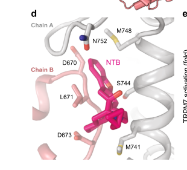

Transient receptor potential cation channel subfamily M member 7 (TRPM7) is a unique ion channel-kinase fusion protein that functions as a calcium- and magnesium-permeable cation channel with an intrinsic serine/threonine protein kinase domain. Essential for cellular ion homeostasis, TRPM7 regulates Mg2+ and Ca2+ influx and is required for multiple developmental processes including melanophore survival, mechanosensory neuron function, dopaminergic neuron development, cardiac pacemaking, exocrine pancreas development, and skeletal mineralization. The protein localizes primarily to the plasma membrane where it forms homo-tetrameric channel complexes.
| GO Term | Evidence | Action | Reason |
|---|---|---|---|
|
GO:0004672
protein kinase activity
|
IBA
GO_REF:0000033 |
MODIFY |
Summary: IBA annotation based on phylogenetic evidence. The deep research confirms TRPM7 contains a C-terminal alpha-kinase domain with serine/threonine kinase activity. However, this term is too general - the specific kinase type should be specified.
Reason: While TRPM7 does have protein kinase activity, the more specific term GO:0004674 (protein serine/threonine kinase activity) better represents the actual molecular function of the alpha-kinase domain.
Proposed replacements:
protein serine/threonine kinase activity
Supporting Evidence:
file:DANRE/trpm7/trpm7-deep-research.md
The C-terminal α-kinase domain of Trpm7 can phosphorylate itself and other substrates... Alpha-kinases are atypical serine/threonine kinases that phosphorylate substrates within alpha-helical regions.
|
|
GO:0005262
calcium channel activity
|
IBA
GO_REF:0000033 |
ACCEPT |
Summary: IBA annotation well-supported by experimental evidence. TRPM7 forms a calcium-permeable cation channel, though Ca2+ is actually one of the least permeable divalent cations compared to Mg2+, Co2+, and others.
Reason: The deep research confirms TRPM7 functions as a calcium channel, mediating Ca2+ influx across membranes. This is a core molecular function.
Supporting Evidence:
file:DANRE/trpm7/trpm7-deep-research.md
Trpm7 forms a ion channel that mediates Ca^2+ influx... Mouse TRPM7 (mTRPM7) has been shown to best permeate zinc (Zn2+) and nickel (Ni2+), followed by barium (Ba2+), cobalt (Co2+), magnesium (Mg2+), manganese (Mn2+), strontium (Sr2+), cadmium (Cd2+) and calcium (Ca2+)
PMID:27628598
TRPM7 exhibits an outwardly rectifying current-voltage relationship due to voltage-dependent block by Mg2+ and calcium (Ca2+) at negative voltages
file:DANRE/trpm7/trpm7-deep-research-falcon.md
TRPM7 forms a plasma-membrane cation channel permeable to **Mg2+**, **Ca2+**, and **Zn2+**, with broader permeability to other divalent cations
|
|
GO:0006816
calcium ion transport
|
IBA
GO_REF:0000033 |
ACCEPT |
Summary: IBA annotation correctly identifies TRPM7's role in calcium transport. The channel conducts Ca2+ ions across membranes as part of its divalent cation transport function.
Reason: TRPM7 mediates calcium ion transport across the plasma membrane. This is a core biological process function, though the channel also transports other divalent cations.
Supporting Evidence:
file:DANRE/trpm7/trpm7-deep-research.md
As an ion channel, TRPM7 mediates the influx of divalent cations (notably Ca^2+ and Mg^2+) across cell membranes, which is crucial for maintaining cellular ion homeostasis
|
|
GO:0005886
plasma membrane
|
IBA
GO_REF:0000033 |
ACCEPT |
Summary: IBA annotation strongly supported by experimental evidence. TRPM7 is an integral membrane protein that primarily localizes to the plasma membrane.
Reason: Multiple lines of evidence confirm TRPM7 localizes to the plasma membrane where it functions as a transmembrane ion channel. This is a core cellular component.
Supporting Evidence:
file:DANRE/trpm7/trpm7-deep-research.md
Trpm7 is an integral membrane protein that primarily localizes to the plasma membrane of cells... 'plasma membrane' is the key Gene Ontology cellular component term for Trpm7, reflecting its role as a transmembrane ion channel at the cell periphery
|
|
GO:0098655
monoatomic cation transmembrane transport
|
IBA
GO_REF:0000033 |
ACCEPT |
Summary: IBA annotation correctly identifies TRPM7's broad cation transport function. The channel conducts various monoatomic cations including Ca2+, Mg2+, Zn2+, Ni2+, and others.
Reason: TRPM7 functions as a non-selective cation channel that transports multiple monoatomic cations across membranes. This is a core biological process.
Supporting Evidence:
file:DANRE/trpm7/trpm7-deep-research.md
Mouse TRPM7 (mTRPM7) has been shown to best permeate zinc (Zn2+) and nickel (Ni2+), followed by barium (Ba2+), cobalt (Co2+), magnesium (Mg2+), manganese (Mn2+), strontium (Sr2+), cadmium (Cd2+) and calcium (Ca2+)
|
|
GO:0000166
nucleotide binding
|
IEA
GO_REF:0000043 |
MODIFY |
Summary: IEA annotation based on keyword mapping. This general term is too vague - TRPM7 specifically binds ATP for its kinase activity.
Reason: While TRPM7 does bind nucleotides, the more specific term GO:0005524 (ATP binding) better represents the actual molecular function, as the kinase domain utilizes ATP.
Proposed replacements:
ATP binding
Supporting Evidence:
file:DANRE/trpm7/trpm7-deep-research.md
It has catalytic activity (utilizing ATP to phosphorylate target proteins)... negatively regulated by intracellular magnesium (Mg2+), adenosine triphosphate (Mg·ATP)
|
|
GO:0004672
protein kinase activity
|
IEA
GO_REF:0000117 |
MODIFY |
Summary: IEA annotation from ARBA machine learning. Duplicate of IBA annotation above, but less specific than needed.
Reason: Same as above IBA annotation - should be more specific as protein serine/threonine kinase activity.
Proposed replacements:
protein serine/threonine kinase activity
Supporting Evidence:
file:DANRE/trpm7/trpm7-deep-research.md
Alpha-kinases are atypical serine/threonine kinases that phosphorylate substrates within alpha-helical regions
|
|
GO:0004674
protein serine/threonine kinase activity
|
IEA
GO_REF:0000120 |
ACCEPT |
Summary: IEA annotation correctly identifies the specific kinase type. The alpha-kinase domain of TRPM7 has serine/threonine kinase activity.
Reason: TRPM7 contains an alpha-kinase domain that phosphorylates serine/threonine residues. This is a core molecular function. Falcon deep research confirms the catalyzed reaction (phosphotransfer to Ser/Thr plus autophosphorylation), consistent with the UniProt EC 2.7.11.1 catalytic activity and the C-terminal alpha-kinase domain (residues 1503-1733).
Supporting Evidence:
file:DANRE/trpm7/trpm7-deep-research.md
the C-terminal α-kinase of Trpm7 phosphorylates serine/threonine residues on target proteins
file:DANRE/trpm7/trpm7-deep-research-falcon.md
α-kinase domain transfers phosphate from ATP to **serine/threonine residues** on protein substrates and on TRPM7 itself (autophosphorylation)
|
|
GO:0005216
monoatomic ion channel activity
|
IEA
GO_REF:0000002 |
ACCEPT |
Summary: IEA annotation from InterPro. Correct general term for TRPM7's ion channel function.
Reason: TRPM7 functions as an ion channel that conducts monoatomic cations. This is a core molecular function, though more specific terms also apply.
Supporting Evidence:
file:DANRE/trpm7/trpm7-deep-research.md
It functions as a calcium- and magnesium-permeable cation channel... The channel's activity is negatively regulated by intracellular Mg^2+ and Mg-ATP levels
file:DANRE/trpm7/trpm7-deep-research-falcon.md
Channel opening requires **PIP2**; receptor pathways that deplete PIP2 reduce TRPM7 activity.
|
|
GO:0005261
monoatomic cation channel activity
|
IEA
GO_REF:0000117 |
ACCEPT |
Summary: IEA annotation from ARBA. Correctly identifies TRPM7 as a cation-selective channel.
Reason: TRPM7 is a cation-selective channel that conducts various monoatomic cations. This is a core molecular function.
Supporting Evidence:
file:DANRE/trpm7/trpm7-deep-research.md
TRPM7 conducts Ca2+ ions across membranes as part of its divalent cation transport function... best permeate zinc (Zn2+) and nickel (Ni2+), followed by barium (Ba2+), cobalt (Co2+), magnesium (Mg2+)
file:DANRE/trpm7/trpm7-deep-research-falcon.md
A reported permeability ranking is **Zn2+ ≈ Ni2+ >> Ba2+ > Co2+ > Mg2+ ≥ Mn2+ ≥ Sr2+ ≥ Cd2+ ≥ Ca2+**, and the channel is not permeable to the trivalent blockers **La3+** or **Gd3+**.
|
|
GO:0005262
calcium channel activity
|
IEA
GO_REF:0000043 |
ACCEPT |
Summary: IEA annotation from keyword mapping. Duplicate of IBA annotation above.
Reason: TRPM7 has calcium channel activity, though Ca2+ is one of the least permeable divalents. Core function.
Supporting Evidence:
file:DANRE/trpm7/trpm7-deep-research.md
calcium (Ca2+)... Trpm7 forms a ion channel that mediates Ca^2+ influx
|
|
GO:0005524
ATP binding
|
IEA
GO_REF:0000120 |
ACCEPT |
Summary: IEA annotation correctly identifies ATP binding for the kinase domain.
Reason: The alpha-kinase domain of TRPM7 requires ATP binding for its catalytic activity. Core molecular function.
Supporting Evidence:
file:DANRE/trpm7/trpm7-deep-research.md
It has catalytic activity (utilizing ATP to phosphorylate target proteins)
PMID:27628598
negatively regulated by intracellular magnesium (Mg2+), adenosine triphosphate (Mg·ATP)
|
|
GO:0005634
nucleus
|
IEA
GO_REF:0000044 |
REMOVE |
Summary: IEA annotation based on subcellular location mapping. No evidence supports nuclear localization for TRPM7.
Reason: TRPM7 is a plasma membrane protein with no documented nuclear localization. This appears to be an incorrect automated annotation.
Supporting Evidence:
file:DANRE/trpm7/trpm7-deep-research.md
Trpm7 is an integral membrane protein that primarily localizes to the plasma membrane of cells... plasma membrane is the key Gene Ontology cellular component term for Trpm7
|
|
GO:0005886
plasma membrane
|
IEA
GO_REF:0000044 |
ACCEPT |
Summary: IEA annotation from subcellular location. Duplicate of IBA annotation above.
Reason: Correctly identifies plasma membrane localization. Core cellular component.
Supporting Evidence:
file:DANRE/trpm7/trpm7-deep-research.md
primarily localizes to the plasma membrane
|
|
GO:0006811
monoatomic ion transport
|
IEA
GO_REF:0000120 |
ACCEPT |
Summary: IEA annotation correctly identifies general ion transport function.
Reason: TRPM7 mediates transport of various monoatomic ions. Core biological process.
Supporting Evidence:
file:DANRE/trpm7/trpm7-deep-research.md
mediates the influx of divalent cations (notably Ca^2+ and Mg^2+) across cell membranes
|
|
GO:0006816
calcium ion transport
|
IEA
GO_REF:0000043 |
ACCEPT |
Summary: IEA annotation from keyword mapping. Duplicate of IBA annotation above.
Reason: TRPM7 mediates calcium ion transport. Core function.
Supporting Evidence:
file:DANRE/trpm7/trpm7-deep-research.md
mediates the influx of divalent cations (notably Ca^2+ and Mg^2+)
|
|
GO:0016020
membrane
|
IEA
GO_REF:0000120 |
ACCEPT |
Summary: IEA annotation. Very general term - plasma membrane is more specific.
Reason: TRPM7 is a membrane protein, though plasma membrane is more specific. Acceptable general annotation.
Supporting Evidence:
file:DANRE/trpm7/trpm7-deep-research.md
integral membrane protein
|
|
GO:0016301
kinase activity
|
IEA
GO_REF:0000043 |
MODIFY |
Summary: IEA annotation. Too general - protein serine/threonine kinase activity is more specific.
Reason: While correct, more specific annotation GO:0004674 better describes the alpha-kinase activity.
Proposed replacements:
protein serine/threonine kinase activity
Supporting Evidence:
file:DANRE/trpm7/trpm7-deep-research.md
Alpha-kinases are atypical serine/threonine kinases
|
|
GO:0016740
transferase activity
|
IEA
GO_REF:0000043 |
MODIFY |
Summary: IEA annotation. Extremely general term for kinase activity.
Reason: Too general. The specific transferase activity is protein serine/threonine kinase.
Proposed replacements:
protein serine/threonine kinase activity
Supporting Evidence:
file:DANRE/trpm7/trpm7-deep-research.md
phosphorylates serine/threonine residues on target proteins
|
|
GO:0030001
metal ion transport
|
IEA
GO_REF:0000117 |
ACCEPT |
Summary: IEA annotation correctly identifies metal ion transport function.
Reason: TRPM7 transports various metal ions including Ca2+, Mg2+, Zn2+, Ni2+. Core biological process.
Supporting Evidence:
file:DANRE/trpm7/trpm7-deep-research.md
best permeate zinc (Zn2+) and nickel (Ni2+), followed by barium (Ba2+), cobalt (Co2+), magnesium (Mg2+), manganese (Mn2+)
|
|
GO:0034220
monoatomic ion transmembrane transport
|
IEA
GO_REF:0000043 |
ACCEPT |
Summary: IEA annotation correctly identifies transmembrane ion transport.
Reason: TRPM7 mediates transmembrane transport of monoatomic ions. Core function.
Supporting Evidence:
file:DANRE/trpm7/trpm7-deep-research.md
mediates the influx of divalent cations... across cell membranes
|
|
GO:0046872
metal ion binding
|
IEA
GO_REF:0000043 |
ACCEPT |
Summary: IEA annotation. General term that could apply to channel pore or regulatory sites.
Reason: TRPM7 binds metal ions both in the channel pore and at regulatory sites (Mg2+ inhibition). Acceptable annotation.
Supporting Evidence:
file:DANRE/trpm7/trpm7-deep-research.md
negatively regulated by intracellular Mg^2+ and Mg-ATP levels – high internal magnesium or ATP can inhibit TRPM7 channel currents
|
|
GO:0051262
protein tetramerization
|
IEA
GO_REF:0000002 |
ACCEPT |
Summary: IEA annotation from InterPro. TRPM7 contains a coiled-coil tetramerization domain and forms homo-tetrameric complexes.
Reason: TRPM7 forms tetrameric channel complexes via its coiled-coil domain. This is essential for channel assembly and function.
Supporting Evidence:
file:DANRE/trpm7/trpm7-deep-research.md
Trpm7 has a coiled-coil region (InterPro IPR032415) near the C-terminus that is crucial for subunit oligomerization and channel assembly... This coiled-coil helps four Trpm7 subunits come together to form a functional channel complex
|
|
GO:0055085
transmembrane transport
|
IEA
GO_REF:0000002 |
ACCEPT |
Summary: IEA annotation from InterPro. General term for transmembrane transport activity.
Reason: TRPM7 mediates transmembrane transport of ions. Core function though more specific terms also apply.
Supporting Evidence:
file:DANRE/trpm7/trpm7-deep-research.md
spans the membrane (with six transmembrane helices per subunit) and forms homo-tetrameric channel complexes in the lipid bilayer
|
|
GO:0070588
calcium ion transmembrane transport
|
IEA
GO_REF:0000043 |
ACCEPT |
Summary: IEA annotation from keyword mapping. More specific version of calcium ion transport.
Reason: TRPM7 mediates calcium ion transport across membranes. Core function.
Supporting Evidence:
file:DANRE/trpm7/trpm7-deep-research.md
The channel is positioned such that its ion-conducting pore allows Ca^2+, Mg^2+, and other small cations to flow from the extracellular space or organelle lumen into the cytosol
|
|
GO:0001966
thigmotaxis
|
IMP
PMID:38970357 Zebrafish trpm7 mutants show reduced motility in free moveme... |
UNDECIDED |
Summary: IMP evidence from 2024 study showing trpm7 mutants have reduced touch-evoked responses and altered movement patterns. However, the cited paper (PMID:38970357) measures movement distance and velocity, not thigmotaxis (wall-proximity/boundary-seeking behavior) specifically.
Reason: PMID:38970357 reports reduced movement distance and swimming velocity in trpm7 mutants, supporting GO:0036269 swimming behavior but not thigmotaxis specifically. A dedicated thigmotaxis assay (e.g., center vs. periphery tracking) would be required to support this annotation.
Supporting Evidence:
PMID:38970357
Behavioral analyses revealed that trpm7 mutants showed compromised motility with their movement distance shorter than wild-type larvae
file:DANRE/trpm7/trpm7-deep-research.md
Mutant larvae exhibit a transient unresponsiveness to touch stimuli – for about 12 hours during early development, trpm7 mutants fail to perform the typical escape reflex when touched
|
|
GO:0036269
swimming behavior
|
IMP
PMID:38970357 Zebrafish trpm7 mutants show reduced motility in free moveme... |
ACCEPT |
Summary: IMP evidence showing trpm7 mutants have reduced swimming velocity and movement distance.
Reason: Experimental evidence demonstrates trpm7 is required for normal swimming behavior. Related to dopaminergic neuron defects.
Supporting Evidence:
PMID:38970357
The velocity of the movement was significantly reduced in trpm7 mutants than in wild-type larvae
file:DANRE/trpm7/trpm7-deep-research.md
Zebrafish lacking Trpm7 show reduced motility and abnormal swimming behavior. Even beyond the touch-response defect, mutants often have sluggish or uncoordinated movement
|
|
GO:0005886
plasma membrane
|
IDA
PMID:27628598 The coiled-coil domain of zebrafish TRPM7 regulates Mg·nucle... |
ACCEPT |
Summary: IDA evidence from electrophysiology studies confirming plasma membrane localization of TRPM7.
Reason: Direct experimental evidence shows TRPM7 localizes to plasma membrane where it functions as an ion channel. Core cellular component.
Supporting Evidence:
PMID:27628598
Patch-clamp experiments were performed in the tight-seal whole-cell configuration... HEK293 T-REx cells stably expressing HA-tagged Danio rerio TRPM7 (drTRPM7)
file:DANRE/trpm7/trpm7-deep-research.md
primarily localizes to the plasma membrane of cells
file:DANRE/trpm7/trpm7-deep-research-falcon.md
TRPM7 localizes to the **plasma membrane** and also to intracellular pools described as **tubulovesicular/synaptic vesicle-like compartments**.
|
|
GO:0010960
magnesium ion homeostasis
|
IDA
PMID:27628598 The coiled-coil domain of zebrafish TRPM7 regulates Mg·nucle... |
ACCEPT |
Summary: IDA evidence from electrophysiology showing TRPM7 regulates Mg2+ homeostasis and is regulated by intracellular Mg2+.
Reason: Direct experimental evidence shows TRPM7 is essential for magnesium homeostasis. This is a core function.
Supporting Evidence:
PMID:27628598
the channel's regulation by magnesium (Mg) and Mg·adenosine triphosphate (Mg·ATP)... A dose-response curve fit to averaged currents extracted at 200 s into the experiment revealed a half-maximal inhibitory concentration (IC50) of 778 ± 291 μM
file:DANRE/trpm7/trpm7-deep-research.md
Based on this profile and the effects of divalent substitution/complementation experiments, the TRPM7 channel function is thought to serve as a primary mechanism for cellular Mg2+ homeostasis
file:DANRE/trpm7/trpm7-deep-research-falcon.md
reduced whole-embryo **total magnesium** and **total calcium** by early larval stages, consistent with TRPM7 acting as an in vivo regulator of organismal divalent-cation balance
|
|
GO:0030001
metal ion transport
|
IDA
PMID:27628598 The coiled-coil domain of zebrafish TRPM7 regulates Mg·nucle... |
ACCEPT |
Summary: IDA evidence from electrophysiology demonstrating TRPM7 conducts various metal ions including Ca2+, Mg2+, Zn2+, Ni2+.
Reason: Direct experimental evidence shows TRPM7 transports multiple metal ions. Core function.
Supporting Evidence:
PMID:27628598
TRPM7 conducted Ca2+ the least compared to other divalents, with cobalt and magnesium permeating the best
file:DANRE/trpm7/trpm7-deep-research.md
Mouse TRPM7 (mTRPM7) has been shown to best permeate zinc (Zn2+) and nickel (Ni2+), followed by barium (Ba2+), cobalt (Co2+), magnesium (Mg2+)
|
|
GO:0048066
developmental pigmentation
|
IMP
PMID:9007256 Zebrafish pigmentation mutations and the processes of neural... |
ACCEPT |
Summary: IMP evidence from original touchtone/nutria mutant studies showing melanophore death and pigmentation defects.
Reason: Strong experimental evidence shows trpm7 mutants have melanophore cell death leading to pigmentation defects. Core developmental function.
Supporting Evidence:
file:DANRE/trpm7/trpm7-deep-research.md
Trpm7 is required for the survival of embryonic melanophores (pigment cells). Zebrafish trpm7 mutants (e.g. touchtone and nutria alleles) show extensive melanophore cell death during development
file:DANRE/trpm7/trpm7-deep-research-falcon.md
In **trpm7 mutant embryos**, melanophore loss results from **cell death with necrotic features** (not caspase-dependent apoptosis).
file:DANRE/trpm7/trpm7-uniprot.txt
Zebrafish pigmentation mutations and the processes of neural crest development
PMID:9007256
Zebrafish pigmentation mutations and the processes of neural crest development.
|
|
GO:0002027
regulation of heart rate
|
IMP
PMID:23878236 Ion channel-kinase TRPM7 is required for maintaining cardiac... |
ACCEPT |
Summary: IMP evidence showing trpm7 mutants develop bradycardia and sinoatrial node dysfunction.
Reason: Experimental evidence demonstrates TRPM7 is required for normal cardiac pacemaking and heart rate regulation. Important physiological function.
Supporting Evidence:
file:DANRE/trpm7/trpm7-deep-research.md
Zebrafish trpm7 mutants exhibit bradycardia (slower than normal heart rate) during larval stages... Trpm7 knockdown has been used as a model of sinoatrial node dysfunction
PMID:23878236
Ion channel-kinase TRPM7 is required for maintaining cardiac automaticity.
|
|
GO:0003014
renal system process
|
IMP
PMID:20881241 trpm7 regulation of in vivo cation homeostasis and kidney fu... |
ACCEPT |
Summary: IMP evidence showing trpm7 mutants develop kidney stones and have abnormal renal ion homeostasis.
Reason: Experimental evidence shows TRPM7 is required for normal kidney function and prevention of stone formation. Important physiological role.
Supporting Evidence:
file:DANRE/trpm7/trpm7-deep-research.md
mutants develop ectopic calcifications, such as kidney stones and aberrant bone calcification, due to improper calcium handling... Trpm7 is highly expressed in the zebrafish Corpuscles of Stannius – specialized endocrine glands in the kidney
PMID:20881241
Sep 29. trpm7 regulation of in vivo cation homeostasis and kidney function involves stanniocalcin 1 and fgf23.
file:DANRE/trpm7/trpm7-deep-research-falcon.md
Mutants also exhibit **kidney stone formation** and altered endocrine programs involving **stanniocalcin 1 (stc1)** and **fgf23**; mechanistically, **fgf23 knockdown reduces kidney stones**
|
|
GO:0055080
monoatomic cation homeostasis
|
IMP
PMID:20881241 trpm7 regulation of in vivo cation homeostasis and kidney fu... |
ACCEPT |
Summary: IMP evidence showing trpm7 regulates systemic Ca2+ and Mg2+ homeostasis, with mutants having dysregulated ion levels.
Reason: Experimental evidence demonstrates TRPM7 is essential for maintaining organismal cation homeostasis. Core function.
Supporting Evidence:
file:DANRE/trpm7/trpm7-deep-research.md
Zebrafish trpm7 mutants have dysregulated Ca^2+ and Mg^2+ levels in bodily fluids, leading to abnormal mineralization of skeletal tissues
PMID:20881241
Sep 29. trpm7 regulation of in vivo cation homeostasis and kidney function involves stanniocalcin 1 and fgf23.
file:DANRE/trpm7/trpm7-deep-research-falcon.md
In zebrafish, **trpm7 mRNA is broadly expressed**, with particularly high abundance in **kidney tubules** (pronephric/mesonephric) and in the **corpuscles of Stannius** (an endocrine organ involved in ionic homeostasis), supporting a primary role in systemic divalent-cation regulation and renal physiology
|
|
GO:0007346
regulation of mitotic cell cycle
|
IMP
PMID:21183474 Transient receptor potential ion channel Trpm7 regulates exo... |
KEEP AS NON CORE |
Summary: IMP evidence suggesting TRPM7 affects cell proliferation in pancreatic development through Mg2+-sensitive signaling.
Reason: While TRPM7 affects cell proliferation, this is likely secondary to its primary ion homeostasis function. Not a core function but a downstream effect.
Supporting Evidence:
file:DANRE/trpm7/trpm7-deep-research.md
Based on this profile and the effects of divalent substitution/complementation experiments, the TRPM7 channel function is thought to serve as a primary mechanism for cellular Mg2+ homeostasis and be essential for cell proliferation
PMID:21183474
Transient receptor potential ion channel Trpm7 regulates exocrine pancreatic epithelial proliferation by Mg2+-sensitive Socs3a signaling in development and cancer.
|
|
GO:0031017
exocrine pancreas development
|
IMP
PMID:21183474 Transient receptor potential ion channel Trpm7 regulates exo... |
ACCEPT |
Summary: IMP evidence showing TRPM7 regulates pancreatic epithelial proliferation through Mg2+-sensitive Socs3a signaling.
Reason: Experimental evidence demonstrates TRPM7 is required for normal exocrine pancreas development. Important developmental function.
Supporting Evidence:
file:DANRE/trpm7/trpm7-deep-research.md
Trpm7 has been implicated in the development of the exocrine pancreas in zebrafish... Expression is also observed in the exocrine pancreas and intestinal tract
PMID:21183474
Transient receptor potential ion channel Trpm7 regulates exocrine pancreatic epithelial proliferation by Mg2+-sensitive Socs3a signaling in development and cancer.
|
|
GO:0050678
regulation of epithelial cell proliferation
|
IMP
PMID:21183474 Transient receptor potential ion channel Trpm7 regulates exo... |
KEEP AS NON CORE |
Summary: IMP evidence from pancreas study showing TRPM7 affects epithelial proliferation.
Reason: TRPM7 affects epithelial proliferation through its ion homeostasis function, but this is a downstream effect rather than a core function.
Supporting Evidence:
file:DANRE/trpm7/trpm7-deep-research.md
it may relate to Trpm7's role in regulating cellular proliferation or differentiation in endodermal tissues
PMID:21183474
Transient receptor potential ion channel Trpm7 regulates exocrine pancreatic epithelial proliferation by Mg2+-sensitive Socs3a signaling in development and cancer.
|
|
GO:0046928
regulation of neurotransmitter secretion
|
IMP
PMID:21832193 TRPM7 is required within zebrafish sensory neurons for the a... |
ACCEPT |
Summary: IMP evidence showing TRPM7 in sensory neurons affects touch-evoked responses, likely through neurotransmitter release.
Reason: TRPM7 in sensory neurons is required for proper neurotransmission during touch-evoked escape responses. Important neurological function. Falcon deep research reinforces that this behavior depends specifically on TRPM7 channel (divalent conductance) activity and not on kinase catalytic activity, and that elevated extracellular divalents can restore the escape response, supporting a divalent-dependent synaptic transmitter-release mechanism.
Supporting Evidence:
file:DANRE/trpm7/trpm7-deep-research.md
This defect in touch-evoked escape behavior can be rescued by expressing Trpm7 specifically in primary sensory neurons... indicating the protein is required within sensory nerves for them to fire or develop properly
PMID:21832193
TRPM7 is required within zebrafish sensory neurons for the activation of touch-evoked escape behaviors.
file:DANRE/trpm7/trpm7-deep-research-falcon.md
Elevated extracellular **divalent cations** can restore escape behavior, supporting a divalent-dependent synaptic mechanism.
|
|
GO:0006582
melanin metabolic process
|
IMP
PMID:17290233 Cell death of melanophores in zebrafish trpm7 mutant embryos... |
ACCEPT |
Summary: IMP evidence showing melanophore death in trpm7 mutants depends on melanin synthesis, with toxic intermediates accumulating.
Reason: TRPM7 is required to prevent toxic buildup of melanin intermediates in melanophores. Important for pigment cell survival.
Supporting Evidence:
file:DANRE/trpm7/trpm7-deep-research.md
It is thought that Trpm7's absence leads to toxic build-up of melanin intermediates in melanophores, causing death
PMID:17290233
2007 Feb 8. Cell death of melanophores in zebrafish trpm7 mutant embryos depends on melanin synthesis.
file:DANRE/trpm7/trpm7-deep-research-falcon.md
**inhibition of melanin synthesis largely prevents melanophore death**, supporting a model where Trpm7-dependent ionic homeostasis buffers pigment cells against toxic melanin-synthesis intermediates or associated stress
|
|
GO:0001503
ossification
|
IMP
PMID:15823540 Defective skeletogenesis with kidney stone formation in dwar... |
ACCEPT |
Summary: IMP evidence from dwarf mutant study showing abnormal bone mineralization and skeletal defects.
Reason: trpm7 mutants have defective skeletal mineralization due to disrupted calcium/magnesium homeostasis. Important developmental function.
Supporting Evidence:
PMID:15823540
Defective skeletogenesis with kidney stone formation in dwarf zebrafish mutant for trpm7
file:DANRE/trpm7/trpm7-deep-research.md
mutants develop ectopic calcifications, such as kidney stones and aberrant bone calcification, due to improper calcium handling
|
|
GO:0030318
melanocyte differentiation
|
IMP
PMID:15823540 Defective skeletogenesis with kidney stone formation in dwar... |
ACCEPT |
Summary: IMP evidence showing trpm7 is required for melanocyte survival and proper differentiation.
Reason: TRPM7 is essential for melanocyte development and survival, with mutants showing extensive melanophore cell death. Core developmental function.
Supporting Evidence:
PMID:15823540
Defective skeletogenesis with kidney stone formation in dwarf zebrafish mutant for trpm7
file:DANRE/trpm7/trpm7-deep-research.md
The melanin-producing cells die and their melanosomes (pigment organelles) are structurally abnormal in Trpm7 mutants... restoring Trpm7 specifically in melanophores rescues their survival
|
|
GO:0001501
skeletal system development
|
IMP
PMID:15823540 Defective skeletogenesis with kidney stone formation in dwar... |
ACCEPT |
Summary: IMP evidence showing trpm7 mutants have skeletal defects and abnormal bone development.
Reason: TRPM7 is required for normal skeletal development through regulation of calcium/magnesium homeostasis. Important developmental function.
Supporting Evidence:
PMID:15823540
Defective skeletogenesis with kidney stone formation in dwarf zebrafish mutant for trpm7
file:DANRE/trpm7/trpm7-deep-research.md
affects bone mineralization and development (via calcium homeostasis)... They are generally growth-impaired (often developing a dwarf phenotype)
|
|
GO:0015095
magnesium ion transmembrane transporter activity
|
IEA | NEW |
Summary: magnesium ion transmembrane transporter activity identified from core_functions analysis
Reason: This molecular function term captures TRPM7's specific role in mediating magnesium ion transport across cell membranes along with other divalent cations.
Supporting Evidence:
file:DANRE/trpm7/trpm7-deep-research.md
TRPM7 mediates the influx of divalent cations (notably Ca^2+ and Mg^2+) across cell membranes, with mouse TRPM7 showing permeability to zinc, nickel, barium, cobalt, and magnesium
PMID:27628598
It is negatively regulated by intracellular magnesium (Mg2+), adenosine triphosphate (Mg·ATP) and other polyvalent molecules
|
Q: How does TRPM7 integrate mechanosensing with magnesium homeostasis in zebrafish development?
Q: What determines the tissue-specific requirements for TRPM7 kinase versus channel activity?
Q: How does TRPM7 regulate cell migration and morphogenesis during gastrulation and organogenesis?
Q: What role does TRPM7 play in left-right asymmetry establishment in the zebrafish embryo?
Experiment: Generate separation-of-function trpm7 alleles (channel-dead pore mutant vs. kinase-dead alpha-kinase mutant) and assay rescue of melanophore survival, total Mg2+/Ca2+ levels, and kidney stone formation in trpm7 mutants.
Hypothesis: TRPM7 channel conductance, but not its kinase activity, is the primary determinant of melanophore survival and cation homeostasis in zebrafish.
Type: CRISPR knock-in / structure-function rescue
Experiment: Measure hcn4 transcript levels and the pacemaker current If in sinoatrial pacemaker cells of trpm7 mutant versus wild-type zebrafish, and test whether hcn4 overexpression rescues bradycardia.
Hypothesis: TRPM7 maintains cardiac automaticity in zebrafish by transcriptionally sustaining hcn4 expression in pacemaker cells, as shown in mouse SAN.
Type: qPCR / electrophysiology
Experiment: Express wild-type and C-terminal coiled-coil truncation drTRPM7 constructs in heterologous cells and patch-clamp the currents across a range of intracellular Mg2+ and Mg-ATP concentrations to map dose-response inhibition.
Hypothesis: The coiled-coil domain confers Mg/Mg-ATP sensitivity that tunes TRPM7 channel activity in a tissue-specific manner relevant to magnesium homeostasis.
Type: whole-cell patch-clamp electrophysiology
The research report should be a detailed narrative explaining the function, biological processes, and localization of the gene product. Citations should be given for all claims.
You should prioritize authoritative reviews and primary scientific literature when conducting research. You can supplement
this with annotations you find in gene/protein databases, but these can be outdated or inaccurate.
We are specifically interested in the primary function of the gene - for enzymes, what reaction is catalyzed, and what is the substrate specificity? For transporters, what is the substrate? For structural proteins or adapters, what is the broader structural role? For signaling molecules, what is the role in the pathway.
We are interested in where in or outside the cell the gene product carries out its function.
We are also interested in the signaling or biochemical pathways in which the gene functions. We are less interested in broad pleiotropic effects, except where these elucidate the precise role.
Include evidence where possible. We are interested in both experimental evidence as well as inference from structure, evolution, or bioinformatic analysis. Precise studies should be prioritized over high-throughput, where available.
The research target is Danio rerio trpm7 (UniProt Q563W7), a TRP melastatin-family cation channel fused to a C-terminal serine/threonine α-kinase (EC 2.7.11.1). Zebrafish genetics papers explicitly connect trpm7 to classic mutant alleles/aliases including touchdown/touchtone (tct) and describe the expected channel-kinase architecture, matching the UniProt description and domain composition (TRPM ion transport domain plus α-kinase domain). (low2011trpm7isrequired pages 1-2, elizondo2010trpm7regulationof pages 1-2, mcneill2007celldeathof pages 1-2)
TRPM7 is often described as a bifunctional channel-enzyme (chanzyme): (i) a nonselective cation channel with strong divalent permeability, and (ii) a cytosolic α-kinase domain that phosphorylates protein substrates on Ser/Thr residues and also autophosphorylates. (okada2023celldeathinduction pages 4-5, decker2015trpm7functionin pages 21-25)
High-level domain organization (per subunit): a large N-terminal TRPM homology region (MHR1–4); a 6-transmembrane channel domain (S1–S6) with a pore loop between S5–S6; a TRP helix and coiled-coil elements; and a C-terminal α-kinase domain (plus an autophosphorylation-rich Ser/Thr region). Cryo-EM shows the tetrameric channel and extensive bound lipids/cholesterol-like densities around the transmembrane region. (nadezhdin2023structuralmechanismsof pages 2-3, okada2023celldeathinduction pages 4-5, nadezhdin2023structuralmechanismsof pages 1-2)
Primary transport function: TRPM7 forms a plasma-membrane cation channel permeable to Mg2+, Ca2+, and Zn2+, with broader permeability to other divalent cations (e.g., Ba2+, Sr2+, Cd2+; and in some contexts other transition metals). (decker2015trpm7functionin pages 17-21, okada2023celldeathinduction pages 4-5)
A reported permeability ranking is Zn2+ ≈ Ni2+ >> Ba2+ > Co2+ > Mg2+ ≥ Mn2+ ≥ Sr2+ ≥ Cd2+ ≥ Ca2+, and the channel is not permeable to the trivalent blockers La3+ or Gd3+. (mittermeier2019thekinasecoupledtrpm7 pages 8-11)
Quantitative electrophysiology: a review summarizing primary measurements reports single-channel unitary conductance ~40 pS at ~−70 mV when extracellular Mg2+ is absent. (okada2023celldeathinduction pages 4-5)
TRPM7 is constitutively active but strongly regulated by intracellular divalents and phosphoinositides:
- Intracellular Mg2+ and Mg·ATP act as negative regulators. (mittermeier2019thekinasecoupledtrpm7 pages 8-11, sturgeon2020theroleof pages 15-18)
- Channel opening requires PIP2; receptor pathways that deplete PIP2 reduce TRPM7 activity. (decker2015trpm7functionin pages 17-21, mittermeier2019thekinasecoupledtrpm7 pages 8-11)
- Extracellular divalents (especially Mg2+) cause strong outward rectification in macroscopic currents via open-channel block. (okada2023celldeathinduction pages 4-5)
- TRPM7 is also described as pH-sensitive (including voltage-dependent pH effects) and responsive to osmotic/mechanical perturbations in some systems. (decker2015trpm7functionin pages 17-21, decker2015trpm7functionin pages 21-25)
A major recent advance is high-resolution cryo-EM defining open/closed gating rearrangements and druggable ligand pockets.
Open-state mechanics: In a gain-of-function open structure, the pore widens near N1097/N1098 (reported pore radius change from <0.5 Å closed to >2.3 Å open), and the narrowest open constriction is near a ring of Y1085 residues (~1.4 Å). Mutational analysis indicates Y1085 hydroxyl chemistry is important for function. (nadezhdin2023structuralmechanismsof pages 4-5)
Key pore electrostatics: acidic vestibule residues are implicated in divalent attraction/selectivity (reviewed with reference to residues such as D1054/E1052 in human TRPM7), with D1054 affecting proton conduction. (okada2023celldeathinduction pages 4-5)
Catalyzed reaction: TRPM7’s α-kinase domain transfers phosphate from ATP to serine/threonine residues on protein substrates and on TRPM7 itself (autophosphorylation). (okada2023celldeathinduction pages 4-5, decker2015trpm7functionin pages 21-25)
Representative substrates (reported across systems; used here as mechanistic inference relevant to zebrafish ortholog): annexin 1/ANXA1, myosin II / myosin IIA heavy chain, eEF2 kinase, and STIM2 (linking to store-operated Ca2+ entry regulation). (decker2015trpm7functionin pages 21-25, mittermeier2019thekinasecoupledtrpm7 pages 8-11)
Domain separability: In zebrafish, at least one core behavioral function (touch-evoked escape) depends on TRPM7 channel activity, whereas TRPM7’s kinase activity and strict preference for divalents over monovalents were reported to be dispensable for that behavior. (low2011trpm7isrequired pages 1-2)
TRPM7 localizes to the plasma membrane and also to intracellular pools described as tubulovesicular/synaptic vesicle-like compartments. A mechanistic source also describes a population of acidic, glutathione-rich vesicles implicated in Zn2+ storage and redox-triggered Zn2+ release (not zebrafish-specific but relevant to inferred cellular roles of TRPM7). (decker2015trpm7functionin pages 21-25, mittermeier2019thekinasecoupledtrpm7 pages 8-11, mcneill2007celldeathof pages 1-2)
In zebrafish, trpm7 mRNA is broadly expressed, with particularly high abundance in kidney tubules (pronephric/mesonephric) and in the corpuscles of Stannius (an endocrine organ involved in ionic homeostasis), supporting a primary role in systemic divalent-cation regulation and renal physiology. (elizondo2010trpm7regulationof pages 1-2)
Functionally, TRPM7 is required within sensory neurons for normal activation of touch-evoked escape behavior. (low2011trpm7isrequired pages 1-2)
Zebrafish touchdown alleles of trpm7 carry mutations that abolish channel activity. Mutants show a transient deficit in touch-evoked escape: they do not respond between 52 and 63 hours post-fertilization (hpf) (reported n = 24 embryos from three clutches). Sensory neurons are present and tactile-responsive, suggesting the behavioral deficit arises downstream (consistent with altered synaptic neurotransmitter release). Elevated extracellular divalent cations can restore escape behavior, supporting a divalent-dependent synaptic mechanism. (low2011trpm7isrequired pages 1-2)
In trpm7 mutant embryos, melanophore loss results from cell death with necrotic features (not caspase-dependent apoptosis). Importantly, inhibition of melanin synthesis largely prevents melanophore death, supporting a model where Trpm7-dependent ionic homeostasis buffers pigment cells against toxic melanin-synthesis intermediates or associated stress. (mcneill2007celldeathof pages 1-2)
Zebrafish trpm7 mutants show reduced whole-embryo total magnesium and total calcium by early larval stages, consistent with TRPM7 acting as an in vivo regulator of organismal divalent-cation balance. Mutants also exhibit kidney stone formation and altered endocrine programs involving stanniocalcin 1 (stc1) and fgf23; mechanistically, fgf23 knockdown reduces kidney stones, linking Trpm7 to endocrine control of mineral homeostasis and renal mineralization. (elizondo2010trpm7regulationof pages 1-2)
Comparative developmental evidence across vertebrates supports that TRPM7 channel function is essential for early morphogenesis and cellular Mg2+ homeostasis, and that channel vs kinase contributions can be separable in some developmental contexts. This supports interpreting zebrafish phenotypes as primarily originating from divalent-cation homeostasis and associated signaling. (nethramangalath2024investigationofthe pages 16-20, sturgeon2020theroleof pages 15-18)
A major 2023 advance is a suite of TRPM7 cryo-EM structures (2.17–2.99 Å), including closed and open conformations and ligand-bound states. These structures link specific conformational changes (S6/TRP rearrangements and pore dilation) to activation and inhibition mechanisms and provide atomic details of lipid interactions. (nadezhdin2023structuralmechanismsof pages 1-2, nadezhdin2023structuralmechanismsof pages 2-3, nadezhdin2023structuralmechanismsof pages 4-5)
The 2023 structural work mapped:
- An intersubunit naltriben (NTB) binding/activation site involving residues D670, L671, M741, S744, N752, where mutations weaken NTB activation. (nadezhdin2023structuralmechanismsof pages 4-5, nadezhdin2023structuralmechanismsof media 0122cc1d)
- A vanilloid-like inhibitor pocket in the transmembrane domain for inhibitors such as VER155008 and NS8593, with key residues including A981, M991, W1111, F1118; these inhibitors stabilize a closed state (and compete with endogenous lipid occupancy in the pocket). (nadezhdin2023structuralmechanismsof media 0122cc1d, nadezhdin2023structuralmechanismsof media a1a7982d)
These findings are directly relevant to zebrafish trpm7 annotation because they provide a mechanistic basis for using agonists/antagonists to probe channel function in vivo (including in zebrafish). (nadezhdin2023structuralmechanismsof pages 1-2, nadezhdin2023structuralmechanismsof media 0122cc1d)
A 2023 review focusing on TRPM7 (in the context of stress and cell death) summarizes core biophysical properties (e.g., outward rectification with divalents; monovalent/divalent conduction; proton conduction) and emphasizes separability of channel and kinase functions. This reinforces TRPM7’s role as a broadly expressed stress- and homeostasis-relevant cation pathway. (okada2023celldeathinduction pages 4-5)
Zebrafish trpm7/tct mutants provide a tractable model to:
- Test how divalent-cation availability modulates neural circuit output (touch-evoked escape) in a defined developmental window. (low2011trpm7isrequired pages 1-2)
- Study pigment-cell survival and metabolic/ionic toxicity coupling (melanin-synthesis-dependent death). (mcneill2007celldeathof pages 1-2)
- Model renal mineralization/kidney stone formation and endocrine control of mineral homeostasis (stc1/fgf23 pathways). (elizondo2010trpm7regulationof pages 1-2)
The structurally mapped compounds naltriben (agonist) and inhibitors NS8593 and VER155008 provide mechanistically interpretable tools for perturbing TRPM7 gating, enabling sharper causal tests than older, less-specific modulators. (nadezhdin2023structuralmechanismsof pages 2-3, nadezhdin2023structuralmechanismsof media 0122cc1d)
The following table consolidates key annotation elements (domains, transport/kinase functions, localization, zebrafish phenotypes, and 2023 structural pharmacology).
| Aspect | Summary for zebrafish trpm7 (UniProt Q563W7) | Key evidence sources |
|---|---|---|
| Verified target identity | Danio rerio trpm7 corresponds to the zebrafish TRPM7 channel-kinase associated with classic mutant aliases touchdown/touchtone (tct) and cb495; literature describes a TRP melastatin family cation channel with a C-terminal serine/threonine α-kinase, matching UniProt Q563W7 domain architecture. | (elizondo2010trpm7regulationof pages 1-2, low2011trpm7isrequired pages 1-2, mcneill2007celldeathof pages 1-2) |
| Domain architecture | TRPM7 is a tetrameric plasma-membrane channel whose subunits contain an N-terminal TRPM homology region (MHR1-4/NTD), 6 transmembrane helices (S1-S6) with a pore loop between S5-S6, a TRP helix, coiled-coil region, serine/threonine-rich autophosphorylation/substrate domain, and a C-terminal α-kinase catalytic domain. Structural work places the CTD after the TMD and resolves extensive lipid interactions around the TMD. | (mittermeier2019thekinasecoupledtrpm7 pages 8-11, nadezhdin2023structuralmechanismsof pages 1-2, nadezhdin2023structuralmechanismsof pages 2-3, okada2023celldeathinduction pages 4-5) |
| Ion permeability / selectivity | TRPM7 is a divalent-permeable nonselective cation channel conducting Mg2+, Ca2+, Zn2+ and additional divalents; broader literature cited in the retrieved evidence also notes permeability to Fe2+, Cu2+, Mn2+, Co2+, Ba2+, Sr2+, Cd2+ and monovalents under some conditions. A reported permeability ranking is Zn2+ ≈ Ni2+ >> Ba2+ > Co2+ > Mg2+ ≥ Mn2+ ≥ Sr2+ ≥ Cd2+ ≥ Ca2+; the channel is not permeable to La3+ or Gd3+. Single-channel conductance is about 40 pS at ~−70 mV in the absence of extracellular Mg2+. | (decker2015trpm7functionin pages 17-21, mittermeier2019thekinasecoupledtrpm7 pages 8-11, sturgeon2020theroleof pages 15-18, okada2023celldeathinduction pages 4-5) |
| Key gating / regulation | Channel activity is constitutive but strongly regulated. Important negative regulators include intracellular Mg2+, Mg·ATP, and acidic extracellular pH; activation/opening requires PIP2. In whole-cell recordings, extracellular divalents produce strong outward rectification via open-channel block. TRPM7 is also reported as sensitive to pH, osmolarity/stretch/swelling, and receptor pathways that deplete PIP2. | (decker2015trpm7functionin pages 17-21, mittermeier2019thekinasecoupledtrpm7 pages 8-11, decker2015trpm7functionin pages 21-25, sturgeon2020theroleof pages 15-18, okada2023celldeathinduction pages 4-5) |
| Pore / permeation determinants | Acidic vestibule residues help attract permeant cations; D1054 and E1052 are highlighted as important for Mg2+/Ca2+ binding/selectivity in human TRPM7, and D1054A abolishes proton conductance. 2023 structural work found the closed-to-open transition widens the gate near N1097/N1098, with the narrowest open constriction near Y1085; Y1085F/S are loss-of-function, supporting a key permeation role. | (nadezhdin2023structuralmechanismsof pages 4-5, okada2023celldeathinduction pages 4-5) |
| Kinase activity | TRPM7 is a protein kinase EC 2.7.11.1 with a cytosolic α-kinase domain that autophosphorylates and phosphorylates serine/threonine residues on downstream targets. Genetic studies indicate channel and kinase functions can be partially separable, with some zebrafish behavioral phenotypes depending mainly on channel function rather than kinase catalytic activity. | (decker2015trpm7functionin pages 21-25, low2011trpm7isrequired pages 1-2, okada2023celldeathinduction pages 4-5) |
| Representative kinase substrates | Reported substrates in the retrieved evidence include annexin A1/annexin 1, myosin II / myosin IIA heavy chain, eEF2 kinase, STIM2, and histones after cleavage/nuclear translocation of the kinase fragment in some systems. These data mostly come from non-zebrafish mechanistic studies but are relevant to inferred molecular function of zebrafish Trpm7. | (mittermeier2019thekinasecoupledtrpm7 pages 8-11, decker2015trpm7functionin pages 21-25) |
| Subcellular localization | TRPM7 localizes primarily to the plasma membrane, but also to intracellular tubulovesicular/synaptic vesicle-like compartments; some evidence describes acidic glutathione-rich vesicles (M7V) implicated in Zn2+ storage/release. The kinase fragment has been reported to translocate to the nucleus after cleavage in some systems. | (mittermeier2019thekinasecoupledtrpm7 pages 8-11, decker2015trpm7functionin pages 21-25, mcneill2007celldeathof pages 1-2) |
| Zebrafish expression | In zebrafish, trpm7 mRNA is broadly expressed, with particularly strong expression in pronephric/mesonephric kidney tubules and the corpuscles of Stannius, consistent with roles in systemic cation homeostasis and renal physiology. | (elizondo2010trpm7regulationof pages 1-2) |
| Zebrafish role: ion homeostasis / kidney | Zebrafish mutants show reduced whole-embryo total magnesium and calcium by early larval stages, supporting a direct role in organismal divalent-cation balance. Mutants also show kidney stone formation and altered endocrine responses involving stanniocalcin 1 (stc1) and fgf23; fgf23 knockdown reduces stones. | (elizondo2010trpm7regulationof pages 1-2) |
| Zebrafish role: melanophore survival | trpm7 homozygous mutants lose melanophores during embryogenesis; melanophore death shows necrotic features rather than caspase-dependent apoptosis. Inhibition of melanin synthesis largely prevents melanophore death, suggesting Trpm7 is needed to maintain ionic/metabolic conditions that protect pigment cells from toxic melanin-synthesis intermediates. | (mcneill2007celldeathof pages 1-2) |
| Zebrafish role: touch-evoked escape | In touchdown/tct mutants, sensory neurons are present and can respond to tactile stimulation, but the animals fail to activate normal escape behavior during a defined developmental window: mutants do not respond between 52 and 63 hpf, based on n = 24 embryos from three clutches. Rescue experiments indicate channel activity, but not kinase activity or strict divalent-over-monovalent selectivity, is required for this behavior. Elevated extracellular divalents can restore escape behavior, consistent with a role in synaptic transmitter release/modulation. | (low2011trpm7isrequired pages 1-2) |
| Additional zebrafish phenotypes | Beyond pigmentation and touch behavior, zebrafish trpm7 mutants show impaired growth, defective skeletogenesis, and broader developmental abnormalities consistent with disrupted Mg2+/Ca2+ homeostasis. Maternal transcript contribution likely buffers the earliest stages, contributing to later onset/recovery of some phenotypes. | (elizondo2010trpm7regulationof pages 1-2, mcneill2007celldeathof pages 1-2) |
| Developmental significance across vertebrates | Comparative evidence supports TRPM7 as essential for embryogenesis, gastrulation/cell movements, proliferation, and Mg2+ homeostasis. In vertebrate embryos, channel function is often more critical than kinase catalytic activity for early morphogenesis, which helps interpret zebrafish phenotypes mechanistically. | (nethramangalath2024investigationofthe pages 16-20, sturgeon2020theroleof pages 15-18) |
| 2023 structural highlight: open-state mechanism | Cryo-EM structures in 2023 resolved TRPM7 at 2.17-2.99 Å, including a 2.19 Å apo closed state and open conformations. A gain-of-function mutant (N1098Q) produced an open state in which the pore radius at N1097 increased from <0.5 Å to >2.3 Å; the narrowest constriction (~1.4 Å) is at Y1085. Gating involves S6 lengthening, TRP helix shortening/rotation, and a π-bulge in S6. | (nadezhdin2023structuralmechanismsof pages 1-2, nadezhdin2023structuralmechanismsof pages 4-5, nadezhdin2023structuralmechanismsof pages 2-3) |
| 2023 pharmacology highlight: naltriben activation site | The agonist naltriben (NTB) binds at an intersubunit site formed by the MHR4/Pre-S1 region of one subunit and the α21/α22 loop of the neighboring subunit. Key coordinating residues include D670, L671, M741, S744, N752; mutating these residues weakens NTB activation, defining a tractable activation pocket. | (nadezhdin2023structuralmechanismsof pages 4-5, nadezhdin2023structuralmechanismsof media 0122cc1d, nadezhdin2023structuralmechanismsof media c43cdd43, nadezhdin2023structuralmechanismsof media 5bbe4004, nadezhdin2023structuralmechanismsof media a1a7982d) |
| 2023 pharmacology highlight: inhibitor site | VER155008 and NS8593 were mapped to a vanilloid-like pocket in the TMD at the interface of the S1-S4 domain and pore domain, contributed by the N-terminal part of S3, C-terminal part of S4, S4-S5 linker, and TRP helix. Key residues include A981, M991, W1111, F1118. These inhibitors stabilize the closed state, supporting TRPM7 druggability. | (nadezhdin2023structuralmechanismsof pages 1-2, nadezhdin2023structuralmechanismsof pages 2-3, nadezhdin2023structuralmechanismsof media 0122cc1d, nadezhdin2023structuralmechanismsof media c43cdd43, nadezhdin2023structuralmechanismsof media 5bbe4004, nadezhdin2023structuralmechanismsof media a1a7982d) |
| Practical application / implementation | Zebrafish trpm7/tct mutants are a practical in vivo model for dissecting divalent-cation homeostasis, synaptic transmission, pigment-cell survival, and renal mineralization. Recent structural mapping of NTB, VER155008, and NS8593 provides a mechanistic framework for using pharmacologic probes in comparative TRPM7 studies, including zebrafish-based functional annotation. | (elizondo2010trpm7regulationof pages 1-2, low2011trpm7isrequired pages 1-2, nadezhdin2023structuralmechanismsof pages 1-2, nadezhdin2023structuralmechanismsof media 0122cc1d) |
Table: This table condenses the main functional annotation points for zebrafish trpm7/Q563W7, combining zebrafish-specific genetics with broader TRPM7 mechanistic and 2023 structural pharmacology evidence. It is useful as a quick-reference map linking domains, ion/kinase function, localization, phenotypes, and modern druggable sites.
Although the report prioritizes 2023 structural advances and zebrafish primary genetics/physiology, some detailed kinase-substrate assignments and intracellular vesicle models are derived from mechanistic studies in other systems and are used here as inference for the zebrafish ortholog (consistent with strong conservation of TRPM7 channel-kinase architecture). Where zebrafish-specific biochemical substrate validation is required, additional targeted zebrafish phosphoproteomics or in vivo substrate assays would be needed beyond the current evidence set. (decker2015trpm7functionin pages 21-25, mittermeier2019thekinasecoupledtrpm7 pages 8-11)
References
(low2011trpm7isrequired pages 1-2): Sean E. Low, Kimberly Amburgey, Eric Horstick, Jeremy Linsley, Shawn M. Sprague, Wilson W. Cui, Weibin Zhou, Hiromi Hirata, Louis Saint-Amant, Richard I. Hume, and John Y. Kuwada. Trpm7 is required within zebrafish sensory neurons for the activation of touch-evoked escape behaviors. The Journal of Neuroscience, 31:11633-11644, Aug 2011. URL: https://doi.org/10.1523/jneurosci.4950-10.2011, doi:10.1523/jneurosci.4950-10.2011. This article has 71 citations.
(elizondo2010trpm7regulationof pages 1-2): Michael R. Elizondo, Erine H. Budi, and David M. Parichy. Trpm7 regulation of in vivo cation homeostasis and kidney function involves stanniocalcin 1 and fgf23. Endocrinology, 151 12:5700-9, Dec 2010. URL: https://doi.org/10.1210/en.2010-0853, doi:10.1210/en.2010-0853. This article has 64 citations and is from a domain leading peer-reviewed journal.
(mcneill2007celldeathof pages 1-2): Matthew S. McNeill, Jennifer Paulsen, Gregory Bonde, Erin Burnight, Mei-Yu Hsu, and Robert A. Cornell. Cell death of melanophores in zebrafish trpm7 mutant embryos depends on melanin synthesis. The Journal of investigative dermatology, 127 8:2020-30, Aug 2007. URL: https://doi.org/10.1038/sj.jid.5700710, doi:10.1038/sj.jid.5700710. This article has 114 citations.
(okada2023celldeathinduction pages 4-5): Yasunobu Okada, Tomohiro Numata, Ravshan Z. Sabirov, Makiko Kashio, Peter G. Merzlyak, and Kaori Sato-Numata. Cell death induction and protection by activation of ubiquitously expressed anion/cation channels. part 3: the roles and properties of trpm2 and trpm7. Frontiers in Cell and Developmental Biology, Sep 2023. URL: https://doi.org/10.3389/fcell.2023.1246955, doi:10.3389/fcell.2023.1246955. This article has 7 citations.
(decker2015trpm7functionin pages 21-25): Amanda R. Decker. Trpm7 function in zebrafish dopaminergic neurons. ArXiv, 2015. URL: https://doi.org/10.17077/etd.7i42ocad, doi:10.17077/etd.7i42ocad. This article has 1 citations.
(nadezhdin2023structuralmechanismsof pages 2-3): Kirill D. Nadezhdin, Leonor Correia, Chamali Narangoda, Dhilon S. Patel, Arthur Neuberger, Thomas Gudermann, Maria G. Kurnikova, Vladimir Chubanov, and Alexander I. Sobolevsky. Structural mechanisms of trpm7 activation and inhibition. Nature Communications, May 2023. URL: https://doi.org/10.1038/s41467-023-38362-3, doi:10.1038/s41467-023-38362-3. This article has 81 citations and is from a highest quality peer-reviewed journal.
(nadezhdin2023structuralmechanismsof pages 1-2): Kirill D. Nadezhdin, Leonor Correia, Chamali Narangoda, Dhilon S. Patel, Arthur Neuberger, Thomas Gudermann, Maria G. Kurnikova, Vladimir Chubanov, and Alexander I. Sobolevsky. Structural mechanisms of trpm7 activation and inhibition. Nature Communications, May 2023. URL: https://doi.org/10.1038/s41467-023-38362-3, doi:10.1038/s41467-023-38362-3. This article has 81 citations and is from a highest quality peer-reviewed journal.
(decker2015trpm7functionin pages 17-21): Amanda R. Decker. Trpm7 function in zebrafish dopaminergic neurons. ArXiv, 2015. URL: https://doi.org/10.17077/etd.7i42ocad, doi:10.17077/etd.7i42ocad. This article has 1 citations.
(mittermeier2019thekinasecoupledtrpm7 pages 8-11): Lorenz Mittermeier. The kinase-coupled trpm7 channel is the central gatekeeper of intestinal mineral absorption. Dissertation, Jan 2019. URL: https://doi.org/10.5282/edoc.24107, doi:10.5282/edoc.24107. This article has 0 citations.
(sturgeon2020theroleof pages 15-18): The role of magnesium homeostasis in embryonic melanocytes and dopamine neurons
(nadezhdin2023structuralmechanismsof pages 4-5): Kirill D. Nadezhdin, Leonor Correia, Chamali Narangoda, Dhilon S. Patel, Arthur Neuberger, Thomas Gudermann, Maria G. Kurnikova, Vladimir Chubanov, and Alexander I. Sobolevsky. Structural mechanisms of trpm7 activation and inhibition. Nature Communications, May 2023. URL: https://doi.org/10.1038/s41467-023-38362-3, doi:10.1038/s41467-023-38362-3. This article has 81 citations and is from a highest quality peer-reviewed journal.
(nethramangalath2024investigationofthe pages 16-20): Thushara Nethramangalath. Investigation of the trpm7 complex in mouse embryonic stem cells. Text, Jan 2024. URL: https://doi.org/10.7282/t3-7gay-vw34, doi:10.7282/t3-7gay-vw34. This article has 0 citations and is from a peer-reviewed journal.
(nadezhdin2023structuralmechanismsof media 0122cc1d): Kirill D. Nadezhdin, Leonor Correia, Chamali Narangoda, Dhilon S. Patel, Arthur Neuberger, Thomas Gudermann, Maria G. Kurnikova, Vladimir Chubanov, and Alexander I. Sobolevsky. Structural mechanisms of trpm7 activation and inhibition. Nature Communications, May 2023. URL: https://doi.org/10.1038/s41467-023-38362-3, doi:10.1038/s41467-023-38362-3. This article has 81 citations and is from a highest quality peer-reviewed journal.
(nadezhdin2023structuralmechanismsof media a1a7982d): Kirill D. Nadezhdin, Leonor Correia, Chamali Narangoda, Dhilon S. Patel, Arthur Neuberger, Thomas Gudermann, Maria G. Kurnikova, Vladimir Chubanov, and Alexander I. Sobolevsky. Structural mechanisms of trpm7 activation and inhibition. Nature Communications, May 2023. URL: https://doi.org/10.1038/s41467-023-38362-3, doi:10.1038/s41467-023-38362-3. This article has 81 citations and is from a highest quality peer-reviewed journal.
(nadezhdin2023structuralmechanismsof media c43cdd43): Kirill D. Nadezhdin, Leonor Correia, Chamali Narangoda, Dhilon S. Patel, Arthur Neuberger, Thomas Gudermann, Maria G. Kurnikova, Vladimir Chubanov, and Alexander I. Sobolevsky. Structural mechanisms of trpm7 activation and inhibition. Nature Communications, May 2023. URL: https://doi.org/10.1038/s41467-023-38362-3, doi:10.1038/s41467-023-38362-3. This article has 81 citations and is from a highest quality peer-reviewed journal.
(nadezhdin2023structuralmechanismsof media 5bbe4004): Kirill D. Nadezhdin, Leonor Correia, Chamali Narangoda, Dhilon S. Patel, Arthur Neuberger, Thomas Gudermann, Maria G. Kurnikova, Vladimir Chubanov, and Alexander I. Sobolevsky. Structural mechanisms of trpm7 activation and inhibition. Nature Communications, May 2023. URL: https://doi.org/10.1038/s41467-023-38362-3, doi:10.1038/s41467-023-38362-3. This article has 81 citations and is from a highest quality peer-reviewed journal.

Generated using OpenAI Deep Research API
Trpm7 (transient receptor potential cation channel, subfamily M, member 7) encodes a unique ion channel-kinase fusion protein. It functions as a calcium- and magnesium-permeable cation channel with an intrinsic serine/threonine protein kinase domain (pmc.ncbi.nlm.nih.gov) (zfin.org). This “channel-kinase” structure is a hallmark of TRPM7 (and its close relative TRPM6) and is not found in most other ion channels (pmc.ncbi.nlm.nih.gov). As an ion channel, TRPM7 mediates the influx of divalent cations (notably Ca^2+ and Mg^2+) across cell membranes, which is crucial for maintaining cellular ion homeostasis (pmc.ncbi.nlm.nih.gov). The channel’s activity is negatively regulated by intracellular Mg^2+ and Mg-ATP levels – high internal magnesium or ATP can inhibit TRPM7 channel currents (pmc.ncbi.nlm.nih.gov). This feedback regulation links the channel’s conductance to the cell’s metabolic and ion status. The C-terminal α-kinase domain of Trpm7 can phosphorylate itself and other substrates, though its in vivo targets are still being characterized. Through this dual functionality, Trpm7 couples ion transport with signaling: for example, changes in Mg^2+ or Ca^2+ influx via TRPM7 may activate its kinase or other pathways to modulate cellular processes. Overall, Trpm7 serves as an important regulator of cation homeostasis, second-messenger signaling (Ca^2+-dependent pathways), and possibly cytoskeletal dynamics via its kinase activity (pmc.ncbi.nlm.nih.gov) (pmc.ncbi.nlm.nih.gov). This essential cellular role is highlighted by the fact that complete loss of Trpm7 is embryonic lethal in mice and frogs, indicating its critical, conserved function in early development (pmc.ncbi.nlm.nih.gov) (pmc.ncbi.nlm.nih.gov). In zebrafish, total loss-of-function is survivable to larval stages but leads to a spectrum of physiological defects (see below), underscoring Trpm7’s central role in multiple molecular processes.
Trpm7 is an integral membrane protein that primarily localizes to the plasma membrane of cells (zfin.org). Like other TRP family channels, Trpm7 spans the membrane (with six transmembrane helices per subunit) and forms homo-tetrameric channel complexes in the lipid bilayer. The channel is positioned such that its ion-conducting pore allows Ca^2+, Mg^2+, and other small cations to flow from the extracellular space or organelle lumen into the cytosol. Consistent with this, Trpm7 has been detected on the cell surface of many cell types. In zebrafish, Trpm7 protein is broadly distributed; for instance, it is present in neuronal membranes (supporting its role in excitability and sensory function) and in kidney tubule membranes (involved in ion reabsorption) (pmc.ncbi.nlm.nih.gov). The kinase domain of Trpm7 faces the cytosol, where it can interact with intracellular substrates. While the plasma membrane is the principal site of Trpm7 action (zfin.org), some studies suggest Trpm7 might also function in certain intracellular membranes or vesicles (for example, influencing vesicular calcium stores), though such roles are less defined. Within the cell, Trpm7 often co-localizes with cytoskeletal and signaling proteins, hinting at its participation in subcellular signaling complexes. However, “plasma membrane” is the key Gene Ontology cellular component term for Trpm7, reflecting its role as a transmembrane ion channel at the cell periphery (zfin.org).
Trpm7 in zebrafish is involved in numerous biological processes, which has been revealed largely through mutant phenotypes and functional studies. Notable processes and phenotypic outcomes include:
Melanophore Development and Survival: Trpm7 is required for the survival of embryonic melanophores (pigment cells). Zebrafish trpm7 mutants (e.g. touchtone and nutria alleles) show extensive melanophore cell death during development (pmc.ncbi.nlm.nih.gov). The melanin-producing cells die and their melanosomes (pigment organelles) are structurally abnormal in Trpm7 mutants (pmc.ncbi.nlm.nih.gov). This phenotype is cell-autonomous – restoring Trpm7 specifically in melanophores rescues their survival (pmc.ncbi.nlm.nih.gov). It is thought that Trpm7’s absence leads to toxic build-up of melanin intermediates in melanophores, causing death (pmc.ncbi.nlm.nih.gov). Thus, Trpm7 is critical for pigment cell development and may regulate melanosome integrity or ion balance in these cells.
Mechanosensory Response (Touch-Evoked Behavior): Trpm7 is essential for normal touch responses in developing zebrafish. Mutant larvae exhibit a transient unresponsiveness to touch stimuli – for about 12 hours during early development, trpm7 mutants fail to perform the typical escape reflex when touched (pmc.ncbi.nlm.nih.gov). This defect in touch-evoked escape behavior can be rescued by expressing Trpm7 specifically in primary sensory neurons (pmc.ncbi.nlm.nih.gov), indicating the protein is required within sensory nerves for them to fire or develop properly. Trpm7 likely influences mechanosensory neuron development or excitability, aligning with the GO process term “thigmotaxis” (movement in response to touch) and general neurological processes (zfin.org). In summary, Trpm7 is needed for the neural circuitry that converts touch into locomotor escape in zebrafish.
Locomotor Activity and Swimming Behavior: Zebrafish lacking Trpm7 show reduced motility and abnormal swimming behavior. Even beyond the touch-response defect, mutants often have sluggish or uncoordinated movement. This has been quantified as reduced free-swimming activity (zfin.org). It reflects neuromuscular or developmental impairments caused by Trpm7 loss. For instance, Trpm7 deficiency leads to abnormalities in dopaminergic neurons in the brain, which in turn impairs motor pattern generation (pmc.ncbi.nlm.nih.gov). Mutants have fewer or improperly differentiated dopamine-producing neurons in the diencephalon, resulting in a Parkinson’s disease-like bradykinetic phenotype (slow movement) (pmc.ncbi.nlm.nih.gov). Treatment of these mutants with dopamine can partially restore movement, implicating Trpm7 in the development of dopaminergic neural circuits and thus normal locomotor behavior (pmc.ncbi.nlm.nih.gov). GO terms such as “locomotory behavior” or “swimming behavior” are relevant to these phenotypes, and Trpm7 acts upstream of those behaviors by enabling proper neuron function and muscle control.
Exocrine Pancreas Development: Trpm7 has been implicated in the development of the exocrine pancreas in zebrafish (zfin.org). Mutant fish from certain genetic screens showed defects in the pancreas, suggesting Trpm7 is needed for normal pancreas morphogenesis or function. While the exact mechanism is not fully detailed in the literature, it may relate to Trpm7’s role in regulating cellular proliferation or differentiation in endodermal tissues. Exocrine pancreas development (GO term) is thus one of the biological processes Trpm7 influences, possibly through effects on the organ’s precursor cell survival or ion balance in developing pancreatic tissue (zfin.org).
Magnesium/Calcium Homeostasis and Mineralization: A key role of Trpm7 is governing divalent cation homeostasis at the organismal level. Zebrafish trpm7 mutants have dysregulated Ca^2+ and Mg^2+ levels in bodily fluids, leading to abnormal mineralization of skeletal tissues (pmc.ncbi.nlm.nih.gov). Notably, mutants develop ectopic calcifications, such as kidney stones and aberrant bone calcification, due to improper calcium handling (pmc.ncbi.nlm.nih.gov) (pmc.ncbi.nlm.nih.gov). Trpm7 is highly expressed in the zebrafish Corpuscles of Stannius – specialized endocrine glands in the kidney that secrete stanniocalcin to regulate calcium balance (pmc.ncbi.nlm.nih.gov). In trpm7 mutants, stanniocalcin and other hormonal pathways (e.g. FGF23) are disrupted, explaining the hypermineralization phenotypes (pmc.ncbi.nlm.nih.gov). These findings indicate Trpm7 is necessary for ionic homeostasis (GO:0072507, maintenance of divalent cation levels) and proper skeletal development. Ensuring correct Mg^2+ uptake through Trpm7 may also be critical for numerous Mg-dependent enzymes and signaling processes during development.
Cardiac Pacemaking (Heart Rate): Loss of Trpm7 affects the cardiovascular system, particularly heart rhythm. Zebrafish trpm7 mutants exhibit bradycardia (slower than normal heart rate) during larval stages (pmc.ncbi.nlm.nih.gov). This suggests Trpm7 is required for normal sinoatrial node function or cardiac muscle excitability. In support, mice with cardiac-specific Trpm7 deletion similarly show bradycardia and conduction block, highlighting a conserved role in pacemaker and cardiac action potential generation (pmc.ncbi.nlm.nih.gov). In zebrafish, Trpm7 knockdown has been used as a model of sinoatrial node dysfunction (zfin.org). Trpm7 likely contributes to the background cation currents or calcium handling in pacemaker cells that drive rhythmic contractions. Thus, heart rate regulation and cardiac muscle contraction processes are linked to Trpm7 activity, and the gene is used to study arrhythmia-related phenotypes in zebrafish models (zfin.org) (zfin.org).
Cell Survival and Development (General): Because Trpm7 is ubiquitously required for cell viability (due to its role in Mg^2+ homeostasis and signaling), trpm7 mutants have additional pleiotropic defects. They are generally growth-impaired (often developing a dwarf phenotype) and can have edema or other signs of developmental stress (pmc.ncbi.nlm.nih.gov). Trpm7’s absence triggers cell death in certain lineages (melanophores, as mentioned, and possibly others under stress conditions). On the other hand, a partial reduction of TRPM7 activity in some contexts can be beneficial – for example, reduced TRPM7 activity in mammalian neurons lessens cell death after ischemic stroke, suggesting TRPM7 contributes to Ca^2+-overload toxicity in neurons (pmc.ncbi.nlm.nih.gov). In zebrafish, however, complete loss leads to specific developmental failures rather than immediate widespread cell death. Trpm7’s roles are context-dependent, affecting different cell types in distinct ways (neural, pigment, renal, cardiac, etc.), which underscores its involvement in numerous biological processes from embryonic development to adult physiology (pmc.ncbi.nlm.nih.gov).
The Trpm7 protein is large (zebrafish Trpm7 is ~1774 amino acids (zfin.org), similar in size to its human ortholog) and contains several defined domains:
Ion Channel Domain: The N-terminal two-thirds of Trpm7 forms the channel proper, including six transmembrane segments (S1–S6) and a pore loop typical of TRP channels. This region (InterPro IPR005821) is the ion transport domain that assembles with three other subunits to create a cation-selective pore (zfin.org). It belongs to the TRPM subfamily of TRP channels (melastatin-related TRP channels), which are characterized by conduction of divalent cations. The transmembrane domain mediates the voltage-dependent and ligand-regulated gating of the channel. Trpm7 channels are constitutively active but modulated by intracellular signals (like Mg^2+, as noted above).
SLOG Domain: Adjacent to the transmembrane segments on the cytosolic side, TRPM7 contains a conserved region sometimes referred to as the SLOG domain (TRPM small linker domain). This domain (InterPro IPR041491) is unique to TRPM proteins and thought to participate in connecting the channel to the kinase domain (zfin.org). It may help sense intracellular ligands or allosterically regulate channel gating. In Trpm7, portions of this linker (including a serine/threonine-proline-rich region, STP) have regulatory phosphorylation sites and contribute to channel inhibition by Mg·ATP (pmc.ncbi.nlm.nih.gov).
Coiled-Coil (CC) Tetramerization Domain: Trpm7 has a coiled-coil region (InterPro IPR032415) near the C-terminus that is crucial for subunit oligomerization and channel assembly (zfin.org). This coiled-coil helps four Trpm7 subunits come together to form a functional channel complex (as part of the tetramerization domain superfamily) (zfin.org). In zebrafish Trpm7, the coiled-coil domain has been shown to modulate the channel’s sensitivity to Mg·nucleotide inhibition – truncating or mutating this region alters how Mg^2+ and Mg-ATP regulate the channel (pmc.ncbi.nlm.nih.gov) (pmc.ncbi.nlm.nih.gov). Thus, the CC domain is not only structural but also influences channel gating kinetics.
α-Kinase Domain: Uniquely, Trpm7 contains a C-terminal protein kinase domain of the alpha-kinase family (InterPro IPR004166 and IPR029601) (zfin.org). Alpha-kinases are atypical serine/threonine kinases that phosphorylate substrates within alpha-helical regions. Trpm7’s kinase domain is cytosolic and remains attached to the channel via the linker domains. It has catalytic activity (utilizing ATP to phosphorylate target proteins), though it is not a classical tyrosine kinase or AGC kinase – it is structurally distinct, belonging to the protein kinase-like superfamily but with a different substrate recognition motif (zfin.org). In Trpm7, this kinase can autophosphorylate several of its own residues and has been reported to phosphorylate proteins such as annexin A1 and myosin IIA in mammalian studies (illustrating potential roles in cytoskeletal regulation and vesicle release). The exact physiological substrates in zebrafish are still under study. Importantly, mutations that render the kinase inactive do not necessarily phenocopy null mutations, indicating the channel function is the primary driver of many of Trpm7’s roles, while the kinase may have modulatory or cell-type-specific functions.
Linker regions: In addition to these defined domains, Trpm7 has intrinsically disordered or flexible regions linking the domains, which often contain sites for phosphorylation and protein–protein interactions. For example, the TRPM7 kinase is preceded by a long linker that includes multiple serine/threonine residues; this region (sometimes called the STP segment) can be heavily phosphorylated and may regulate kinase accessibility or channel gating. These linker sequences can also serve as binding sites for molecules that modulate Trpm7 (like PIP_2 or protein partners).
In summary, Trpm7’s protein structure comprises an N-terminal channel module (ion selectivity filter and gating machinery) and a C-terminal enzyme module, bridged by regulatory segments (SLOG, coiled-coil). This multi-domain architecture enables Trpm7 to act as a signal integrator – for instance, intracellular magnesium can bind the channel or kinase parts to feedback-regulate channel opening (pmc.ncbi.nlm.nih.gov). All these domains are conserved in the zebrafish Trpm7 protein, which shares significant sequence and structural homology with mammalian TRPM7, ensuring that insights from zebrafish mutants are relevant across species.
In zebrafish, trpm7 is widely expressed during development and in adult tissues, consistent with its fundamental role in cellular physiology (pmc.ncbi.nlm.nih.gov). Expression data indicate that trpm7 transcripts and protein are present in many organ systems, including the nervous system, integument (skin), eye, digestive organs, and renal system (zfin.org). For example, Trpm7 mRNA is detected in the developing eye (retina), in the skin/fin tissues, and in the neural tube and brain regions of embryos. Notably, the Corpuscles of Stannius (renal gland) show high Trpm7 expression, aligning with its involvement in calcium balance (pmc.ncbi.nlm.nih.gov). In the nervous system, Trpm7 is expressed in regions that include sensory neurons and possibly catecholaminergic neurons, supporting its roles in touch response and dopaminergic neuron development. Expression is also observed in the exocrine pancreas and intestinal tract, providing a basis for the pancreas developmental phenotype when Trpm7 is lost (zfin.org).
During early embryogenesis, trpm7 is likely maternally contributed (given the early lethal phenotype in other species when it’s absent, zebrafish maternal-zygotic mutants would be severely affected). Zebrafish with zygotic trpm7 mutation develop to larval stages, suggesting that maternal Trpm7 RNA/protein may suffice through early cleavage stages, with zygotic expression required later (specific expression timing has been reported in some studies but generally picks up during organogenesis). As development proceeds, trpm7 expression becomes enriched in certain tissues, such as pigment cells (melanophores) and the otic vesicle, as well as continuing broadly in the CNS and trunk.
Regulation of trpm7 expression at the transcriptional level is not fully characterized; it appears to be relatively constitutive in many cell types. However, some stimuli or conditions can modulate Trpm7 levels. For instance, in cell culture or mammalian systems, changes in magnesium availability can upregulate or downregulate TRPM7 expression post-transcriptionally, as the cell adjusts to ion demand. In zebrafish, hormones that control mineral homeostasis (like stanniocalcin and Fgf23) might indirectly affect Trpm7 activity or expression as part of feedback loops (pmc.ncbi.nlm.nih.gov), but direct transcriptional regulation remains to be shown. Overall, the expression pattern of trpm7 is broad and critical – its presence in diverse tissues matches the widespread defects seen in mutants, and underscores that Trpm7 is a house-keeping gene required in many contexts (reflected in the ubiquitous expression noted in both zebrafish and mammals (pmc.ncbi.nlm.nih.gov)).
Trpm7 is highly conserved across vertebrates and even more broadly across metazoans. The zebrafish trpm7 gene is the clear ortholog of human TRPM7, sharing substantial sequence identity and all functional domains (zfin.org). Human TRPM7 and zebrafish Trpm7 proteins are very similar in structure (with the channel and kinase domains aligning closely) and share similar biophysical properties (pmc.ncbi.nlm.nih.gov). For example, electrophysiological studies demonstrate that zebrafish Trpm7 currents have properties akin to mammalian TRPM7 currents – both are divalent-selective, inward currents showing regulation by internal Mg^2+ (pmc.ncbi.nlm.nih.gov). This functional conservation means discoveries in one species are often applicable to the other. Zebrafish and mammals both have two TRPM “channel-kinase” genes, TRPM7 and the closely related TRPM6 (which likely arose from a gene duplication in early vertebrates). Zebrafish Trpm7 is more ubiquitously expressed and essential, while Trpm6 (in zebrafish and human) is more tissue-specific (kidney/intestine) for magnesium uptake; nonetheless, the channel structures are conserved.
Not only is the protein sequence conserved, but the biological roles of Trpm7 show conservation. The requirement of Trpm7 for melanocyte (pigment cell) survival is observed in zebrafish, and correspondingly, mouse models with neural crest-specific Trpm7 deletion show melanocyte loss in fur (a pigment defect) (pmc.ncbi.nlm.nih.gov). Similarly, the role in cardiac function is conserved: zebrafish trpm7 mutants and mice with Trpm7 ablated in the heart both develop bradycardia, indicating the pacemaking role is ancient and retained (pmc.ncbi.nlm.nih.gov). The essential nature of Trpm7 is also conserved – complete knockout in mice leads to early embryonic lethality (pmc.ncbi.nlm.nih.gov), and Xenopus frog embryos lacking Trpm7 die in gastrulation (pmc.ncbi.nlm.nih.gov), whereas zebrafish can survive longer mainly due to maternal contribution rescuing early development. This cross-species comparison highlights that TRPM7 performs fundamental cellular tasks that have been maintained through evolution. Even in invertebrates, while true TRPM7 orthologs with kinase domains are not found in fruit flies or worms, related TRP channels (without kinases) and separate alpha-kinases exist, hinting that the combination in TRPM7 might have emerged in early chordates.
At the genetic level, human TRPM7 is located on chromosome 15 and mutations in it affect similar pathways (e.g., magnesium homeostasis) as zebrafish trpm7 mutations do. The zebrafish gene is on chromosome 18 (zfin.org). Phylogenetic analysis groups zebrafish Trpm7 with other vertebrate TRPM7 proteins, distinct from the TRPM6 clade and other TRPM family members (pmc.ncbi.nlm.nih.gov). Importantly, critical residues for channel function (the pore region glutamates, etc.) and kinase activity (the HRD motif of the kinase domain) are all conserved in zebrafish Trpm7. Thus, Danio rerio serves as an excellent model to study TRPM7, leveraging the evolutionary conservation to understand how this protein works in higher vertebrates, while the zebrafish’s relative genetic accessibility allows experimentation that would be lethal in mammals (pmc.ncbi.nlm.nih.gov).
Trpm7’s broad physiological roles mean that its dysfunction is linked to various disease states or phenotypes, some of which are modeled in zebrafish:
Neurodegeneration (ALS/PD-like syndromes): The human TRPM7 has been investigated as a susceptibility gene for a neurodegenerative condition known as ALS-Parkinsonism/Dementia complex (observed in certain Pacific populations). A specific TRPM7 missense variant (Thr1482Ile) was found in some patients with this syndrome; this variant channel showed heightened sensitivity to Mg^2+ inhibition and potentially could lead to magnesium imbalance in neurons (pmc.ncbi.nlm.nih.gov) (pmc.ncbi.nlm.nih.gov). It was proposed that in an environment low in magnesium and calcium (such as parts of Guam or the Kii Peninsula in Japan), individuals with this TRPM7 variant are at higher risk for neurodegeneration due to chronic subtle Mg^2+ deficiency in the CNS (pmc.ncbi.nlm.nih.gov). While later studies have debated the strength of this association, it underscores TRPM7’s possible role in neurodegenerative disease. In zebrafish, trpm7 mutants show dopaminergic neuron loss and motor defects reminiscent of Parkinson’s disease, providing a Parkinson’s model for studying neuroprotective interventions (pmc.ncbi.nlm.nih.gov). They are also hypersensitive to certain neurotoxins (e.g., MPP^+), linking Trpm7 to neuronal resilience against oxidative stress (pmc.ncbi.nlm.nih.gov). These findings suggest that TRPM7 activity is important for neuronal survival, and dysregulation can contribute to neurodegenerative processes.
Cardiac Arrhythmia: As noted, Trpm7 deficiency causes bradycardia in zebrafish larvae (pmc.ncbi.nlm.nih.gov). Morpholino knockdown of trpm7 was used to model sinoatrial node dysfunction, a cause of sick sinus syndrome (a human arrhythmia). Indeed, trpm7 knockdown fish had arrhythmic heartbeat and were employed to study the mechanisms of pacemaker failure (zfin.org) (zfin.org). In mice, cardiomyocyte-specific Trpm7 deletion leads to conduction block and atrioventricular node dysfunction (pmc.ncbi.nlm.nih.gov). Thus, TRPM7 has been implicated in cardiac conduction disease. Human studies have noted TRPM7’s involvement in cardiac fibrosis and ischemic heart disease as well (pmc.ncbi.nlm.nih.gov). Zebrafish provide a platform to screen for modulators of heart rate via Trpm7 and to understand how ion imbalances affect cardiac physiology, relevant to arrhythmia disorders.
Magnesium Deficiency Disorders: TRPM7 is one of the main regulators of systemic magnesium balance. While mutations in the related channel TRPM6 are a known cause of familial hypomagnesemia in humans, TRPM7’s role has also been examined. No Mendelian disease caused by TRPM7 mutations has been definitively identified, likely because complete loss is not compatible with life. However, TRPM7 has been suggested to contribute to metabolic syndrome and diabetes (where Mg^2+ handling is often impaired) and to stroke injury (excess TRPM7 activity during ischemia can lead to neuronal death). In zebrafish, the trpm7 mutant (“trpm7^b508”, originally named touchtone) is an aphenotypic dwarf with mineralization defects, which has been used to study kidney stone formation and skeletal dysplasias (pmc.ncbi.nlm.nih.gov). The mutant’s propensity to form kidney stones was linked to dysregulation of stanniocalcin and Fgf23, hormones that maintain mineral homeostasis (pmc.ncbi.nlm.nih.gov). This makes zebrafish trpm7 mutants a model for studying kidney mineralization disorders and bone development diseases, such as hyperostosis or mineral imbalance syndromes.
Cancer and Cell Proliferation: Increased TRPM7 activity has been observed in certain cancers (e.g., breast, pancreatic, prostate cancers) and is thought to promote cancer cell survival, migration, and invasion. TRPM7’s kinase can affect actomyosin contractility, aiding metastasis in some contexts (pmc.ncbi.nlm.nih.gov) (pmc.ncbi.nlm.nih.gov). While this is mostly studied in human cell lines, zebrafish cancer models could potentially leverage trpm7 knockdown/overexpression to see effects on tumor growth or metastasis. There is ongoing interest in TRPM7 as a therapeutic target in cancer and in fibrotic diseases. Zebrafish’s rapid development and transparent embryos make them suitable for in vivo drug screens targeting Trpm7 channel activity. For instance, compounds like waixenicin A are TRPM7 inhibitors; interestingly zebrafish Trpm7 was found to be insensitive to waixenicin A (unlike the mammalian channel) (pmc.ncbi.nlm.nih.gov), which provides insights into species differences in drug response.
In summary, Danio rerio trpm7 mutants and knockdowns recapitulate aspects of human disease phenotypes – from neurodegeneration to heart arrhythmia to mineral imbalance – making this gene and its pathways of high biomedical relevance. The Gene Ontology (GO) annotations for disease modeling are not direct, but the phenotypic outcomes correspond to GO processes like “neuron death,” “heart contraction,” and “bone mineralization.” The broad impact of Trpm7 on cellular health means that any condition involving ion imbalance or stress signaling could be linked to TRPM7 dysfunction.
Based on the above evidence, the zebrafish trpm7 gene can be annotated with several key Gene Ontology terms (supported by experimental findings):
(Additional inferred functions: Trpm7 also binds metal ions and ATP, and has voltage-gated cation channel activity, though these are inherent to its channel function.)
Biological Process (BP):
Cellular response to oxidative stress (GO:0034599) – Trpm7 mutants’ sensitivity to neurotoxins suggests a role in how cells handle oxidative stress (Trpm7 channel activity might affect oxidative stress pathways) (pmc.ncbi.nlm.nih.gov).
Cellular Component (CC):
Each of these GO annotations is supported by experimental observations in zebrafish or orthologous systems. For instance, calcium channel activity is evidenced by TRPM7 currents measured in electrophysiology (pmc.ncbi.nlm.nih.gov), and the plasma membrane localization is confirmed by cellular fractionation and imaging (zfin.org). The involvement in pancreas development, touch response, and swimming behavior comes from mutant phenotype analyses in zebrafish (zfin.org) (pmc.ncbi.nlm.nih.gov). Collectively, these GO terms capture the multifaceted roles of Trpm7: it is a membrane ion channel (MF) and kinase (MF) that resides in the plasma membrane (CC) and participates in critical biological processes (BP) ranging from ion homeostasis and developmental pathways to sensory behavior and heart rhythm regulation.
References:
id: Q563W7
gene_symbol: trpm7
taxon:
id: NCBITaxon:7955
label: Danio rerio
description: Transient receptor potential cation channel subfamily M member 7 (TRPM7)
is a unique ion channel-kinase fusion protein that functions as a calcium- and magnesium-permeable
cation channel with an intrinsic serine/threonine protein kinase domain. Essential
for cellular ion homeostasis, TRPM7 regulates Mg2+ and Ca2+ influx and is required
for multiple developmental processes including melanophore survival, mechanosensory
neuron function, dopaminergic neuron development, cardiac pacemaking, exocrine pancreas
development, and skeletal mineralization. The protein localizes primarily to the
plasma membrane where it forms homo-tetrameric channel complexes.
existing_annotations:
- term:
id: GO:0004672
label: protein kinase activity
evidence_type: IBA
original_reference_id: GO_REF:0000033
review:
summary: IBA annotation based on phylogenetic evidence. The deep research confirms
TRPM7 contains a C-terminal alpha-kinase domain with serine/threonine kinase
activity. However, this term is too general - the specific kinase type should
be specified.
action: MODIFY
reason: While TRPM7 does have protein kinase activity, the more specific term
GO:0004674 (protein serine/threonine kinase activity) better represents the
actual molecular function of the alpha-kinase domain.
proposed_replacement_terms:
- id: GO:0004674
label: protein serine/threonine kinase activity
supported_by:
- reference_id: file:DANRE/trpm7/trpm7-deep-research.md
supporting_text: The C-terminal α-kinase domain of Trpm7 can phosphorylate itself
and other substrates... Alpha-kinases are atypical serine/threonine kinases
that phosphorylate substrates within alpha-helical regions.
- term:
id: GO:0005262
label: calcium channel activity
evidence_type: IBA
original_reference_id: GO_REF:0000033
review:
summary: IBA annotation well-supported by experimental evidence. TRPM7 forms a
calcium-permeable cation channel, though Ca2+ is actually one of the least permeable
divalent cations compared to Mg2+, Co2+, and others.
action: ACCEPT
reason: The deep research confirms TRPM7 functions as a calcium channel, mediating
Ca2+ influx across membranes. This is a core molecular function.
supported_by:
- reference_id: file:DANRE/trpm7/trpm7-deep-research.md
supporting_text: Trpm7 forms a ion channel that mediates Ca^2+ influx... Mouse
TRPM7 (mTRPM7) has been shown to best permeate zinc (Zn2+) and nickel (Ni2+),
followed by barium (Ba2+), cobalt (Co2+), magnesium (Mg2+), manganese (Mn2+),
strontium (Sr2+), cadmium (Cd2+) and calcium (Ca2+)
- reference_id: PMID:27628598
supporting_text: TRPM7 exhibits an outwardly rectifying current-voltage relationship
due to voltage-dependent block by Mg2+ and calcium (Ca2+) at negative voltages
- reference_id: file:DANRE/trpm7/trpm7-deep-research-falcon.md
supporting_text: |-
TRPM7 forms a plasma-membrane cation channel permeable to **Mg2+**, **Ca2+**, and **Zn2+**, with broader permeability to other divalent cations
- term:
id: GO:0006816
label: calcium ion transport
evidence_type: IBA
original_reference_id: GO_REF:0000033
review:
summary: IBA annotation correctly identifies TRPM7's role in calcium transport.
The channel conducts Ca2+ ions across membranes as part of its divalent cation
transport function.
action: ACCEPT
reason: TRPM7 mediates calcium ion transport across the plasma membrane. This
is a core biological process function, though the channel also transports other
divalent cations.
supported_by:
- reference_id: file:DANRE/trpm7/trpm7-deep-research.md
supporting_text: As an ion channel, TRPM7 mediates the influx of divalent cations
(notably Ca^2+ and Mg^2+) across cell membranes, which is crucial for maintaining
cellular ion homeostasis
- term:
id: GO:0005886
label: plasma membrane
evidence_type: IBA
original_reference_id: GO_REF:0000033
review:
summary: IBA annotation strongly supported by experimental evidence. TRPM7 is
an integral membrane protein that primarily localizes to the plasma membrane.
action: ACCEPT
reason: Multiple lines of evidence confirm TRPM7 localizes to the plasma membrane
where it functions as a transmembrane ion channel. This is a core cellular component.
supported_by:
- reference_id: file:DANRE/trpm7/trpm7-deep-research.md
supporting_text: Trpm7 is an integral membrane protein that primarily localizes
to the plasma membrane of cells... 'plasma membrane' is the key Gene Ontology
cellular component term for Trpm7, reflecting its role as a transmembrane
ion channel at the cell periphery
- term:
id: GO:0098655
label: monoatomic cation transmembrane transport
evidence_type: IBA
original_reference_id: GO_REF:0000033
review:
summary: IBA annotation correctly identifies TRPM7's broad cation transport function.
The channel conducts various monoatomic cations including Ca2+, Mg2+, Zn2+,
Ni2+, and others.
action: ACCEPT
reason: TRPM7 functions as a non-selective cation channel that transports multiple
monoatomic cations across membranes. This is a core biological process.
supported_by:
- reference_id: file:DANRE/trpm7/trpm7-deep-research.md
supporting_text: Mouse TRPM7 (mTRPM7) has been shown to best permeate zinc (Zn2+)
and nickel (Ni2+), followed by barium (Ba2+), cobalt (Co2+), magnesium (Mg2+),
manganese (Mn2+), strontium (Sr2+), cadmium (Cd2+) and calcium (Ca2+)
- term:
id: GO:0000166
label: nucleotide binding
evidence_type: IEA
original_reference_id: GO_REF:0000043
review:
summary: IEA annotation based on keyword mapping. This general term is too vague
- TRPM7 specifically binds ATP for its kinase activity.
action: MODIFY
reason: While TRPM7 does bind nucleotides, the more specific term GO:0005524 (ATP
binding) better represents the actual molecular function, as the kinase domain
utilizes ATP.
proposed_replacement_terms:
- id: GO:0005524
label: ATP binding
supported_by:
- reference_id: file:DANRE/trpm7/trpm7-deep-research.md
supporting_text: It has catalytic activity (utilizing ATP to phosphorylate target
proteins)... negatively regulated by intracellular magnesium (Mg2+), adenosine
triphosphate (Mg·ATP)
- term:
id: GO:0004672
label: protein kinase activity
evidence_type: IEA
original_reference_id: GO_REF:0000117
review:
summary: IEA annotation from ARBA machine learning. Duplicate of IBA annotation
above, but less specific than needed.
action: MODIFY
reason: Same as above IBA annotation - should be more specific as protein serine/threonine
kinase activity.
proposed_replacement_terms:
- id: GO:0004674
label: protein serine/threonine kinase activity
supported_by:
- reference_id: file:DANRE/trpm7/trpm7-deep-research.md
supporting_text: Alpha-kinases are atypical serine/threonine kinases that phosphorylate
substrates within alpha-helical regions
- term:
id: GO:0004674
label: protein serine/threonine kinase activity
evidence_type: IEA
original_reference_id: GO_REF:0000120
review:
summary: IEA annotation correctly identifies the specific kinase type. The alpha-kinase
domain of TRPM7 has serine/threonine kinase activity.
action: ACCEPT
reason: TRPM7 contains an alpha-kinase domain that phosphorylates serine/threonine
residues. This is a core molecular function. Falcon deep research confirms the
catalyzed reaction (phosphotransfer to Ser/Thr plus autophosphorylation), consistent
with the UniProt EC 2.7.11.1 catalytic activity and the C-terminal alpha-kinase
domain (residues 1503-1733).
supported_by:
- reference_id: file:DANRE/trpm7/trpm7-deep-research.md
supporting_text: the C-terminal α-kinase of Trpm7 phosphorylates serine/threonine
residues on target proteins
- reference_id: file:DANRE/trpm7/trpm7-deep-research-falcon.md
supporting_text: |-
α-kinase domain transfers phosphate from ATP to **serine/threonine residues** on protein substrates and on TRPM7 itself (autophosphorylation)
- term:
id: GO:0005216
label: monoatomic ion channel activity
evidence_type: IEA
original_reference_id: GO_REF:0000002
review:
summary: IEA annotation from InterPro. Correct general term for TRPM7's ion channel
function.
action: ACCEPT
reason: TRPM7 functions as an ion channel that conducts monoatomic cations. This
is a core molecular function, though more specific terms also apply.
supported_by:
- reference_id: file:DANRE/trpm7/trpm7-deep-research.md
supporting_text: It functions as a calcium- and magnesium-permeable cation channel...
The channel's activity is negatively regulated by intracellular Mg^2+ and
Mg-ATP levels
- reference_id: file:DANRE/trpm7/trpm7-deep-research-falcon.md
supporting_text: |-
Channel opening requires **PIP2**; receptor pathways that deplete PIP2 reduce TRPM7 activity.
- term:
id: GO:0005261
label: monoatomic cation channel activity
evidence_type: IEA
original_reference_id: GO_REF:0000117
review:
summary: IEA annotation from ARBA. Correctly identifies TRPM7 as a cation-selective
channel.
action: ACCEPT
reason: TRPM7 is a cation-selective channel that conducts various monoatomic cations.
This is a core molecular function.
supported_by:
- reference_id: file:DANRE/trpm7/trpm7-deep-research.md
supporting_text: TRPM7 conducts Ca2+ ions across membranes as part of its divalent
cation transport function... best permeate zinc (Zn2+) and nickel (Ni2+),
followed by barium (Ba2+), cobalt (Co2+), magnesium (Mg2+)
- reference_id: file:DANRE/trpm7/trpm7-deep-research-falcon.md
supporting_text: |-
A reported permeability ranking is **Zn2+ ≈ Ni2+ >> Ba2+ > Co2+ > Mg2+ ≥ Mn2+ ≥ Sr2+ ≥ Cd2+ ≥ Ca2+**, and the channel is not permeable to the trivalent blockers **La3+** or **Gd3+**.
- term:
id: GO:0005262
label: calcium channel activity
evidence_type: IEA
original_reference_id: GO_REF:0000043
review:
summary: IEA annotation from keyword mapping. Duplicate of IBA annotation above.
action: ACCEPT
reason: TRPM7 has calcium channel activity, though Ca2+ is one of the least permeable
divalents. Core function.
supported_by:
- reference_id: file:DANRE/trpm7/trpm7-deep-research.md
supporting_text: calcium (Ca2+)... Trpm7 forms a ion channel that mediates Ca^2+
influx
- term:
id: GO:0005524
label: ATP binding
evidence_type: IEA
original_reference_id: GO_REF:0000120
review:
summary: IEA annotation correctly identifies ATP binding for the kinase domain.
action: ACCEPT
reason: The alpha-kinase domain of TRPM7 requires ATP binding for its catalytic
activity. Core molecular function.
supported_by:
- reference_id: file:DANRE/trpm7/trpm7-deep-research.md
supporting_text: It has catalytic activity (utilizing ATP to phosphorylate target
proteins)
- reference_id: PMID:27628598
supporting_text: negatively regulated by intracellular magnesium (Mg2+), adenosine
triphosphate (Mg·ATP)
- term:
id: GO:0005634
label: nucleus
evidence_type: IEA
original_reference_id: GO_REF:0000044
review:
summary: IEA annotation based on subcellular location mapping. No evidence supports
nuclear localization for TRPM7.
action: REMOVE
reason: TRPM7 is a plasma membrane protein with no documented nuclear localization.
This appears to be an incorrect automated annotation.
supported_by:
- reference_id: file:DANRE/trpm7/trpm7-deep-research.md
supporting_text: Trpm7 is an integral membrane protein that primarily localizes
to the plasma membrane of cells... plasma membrane is the key Gene Ontology
cellular component term for Trpm7
- term:
id: GO:0005886
label: plasma membrane
evidence_type: IEA
original_reference_id: GO_REF:0000044
review:
summary: IEA annotation from subcellular location. Duplicate of IBA annotation
above.
action: ACCEPT
reason: Correctly identifies plasma membrane localization. Core cellular component.
supported_by:
- reference_id: file:DANRE/trpm7/trpm7-deep-research.md
supporting_text: primarily localizes to the plasma membrane
- term:
id: GO:0006811
label: monoatomic ion transport
evidence_type: IEA
original_reference_id: GO_REF:0000120
review:
summary: IEA annotation correctly identifies general ion transport function.
action: ACCEPT
reason: TRPM7 mediates transport of various monoatomic ions. Core biological process.
supported_by:
- reference_id: file:DANRE/trpm7/trpm7-deep-research.md
supporting_text: mediates the influx of divalent cations (notably Ca^2+ and
Mg^2+) across cell membranes
- term:
id: GO:0006816
label: calcium ion transport
evidence_type: IEA
original_reference_id: GO_REF:0000043
review:
summary: IEA annotation from keyword mapping. Duplicate of IBA annotation above.
action: ACCEPT
reason: TRPM7 mediates calcium ion transport. Core function.
supported_by:
- reference_id: file:DANRE/trpm7/trpm7-deep-research.md
supporting_text: mediates the influx of divalent cations (notably Ca^2+ and
Mg^2+)
- term:
id: GO:0016020
label: membrane
evidence_type: IEA
original_reference_id: GO_REF:0000120
review:
summary: IEA annotation. Very general term - plasma membrane is more specific.
action: ACCEPT
reason: TRPM7 is a membrane protein, though plasma membrane is more specific.
Acceptable general annotation.
supported_by:
- reference_id: file:DANRE/trpm7/trpm7-deep-research.md
supporting_text: integral membrane protein
- term:
id: GO:0016301
label: kinase activity
evidence_type: IEA
original_reference_id: GO_REF:0000043
review:
summary: IEA annotation. Too general - protein serine/threonine kinase activity
is more specific.
action: MODIFY
reason: While correct, more specific annotation GO:0004674 better describes the
alpha-kinase activity.
proposed_replacement_terms:
- id: GO:0004674
label: protein serine/threonine kinase activity
supported_by:
- reference_id: file:DANRE/trpm7/trpm7-deep-research.md
supporting_text: Alpha-kinases are atypical serine/threonine kinases
- term:
id: GO:0016740
label: transferase activity
evidence_type: IEA
original_reference_id: GO_REF:0000043
review:
summary: IEA annotation. Extremely general term for kinase activity.
action: MODIFY
reason: Too general. The specific transferase activity is protein serine/threonine
kinase.
proposed_replacement_terms:
- id: GO:0004674
label: protein serine/threonine kinase activity
supported_by:
- reference_id: file:DANRE/trpm7/trpm7-deep-research.md
supporting_text: phosphorylates serine/threonine residues on target proteins
- term:
id: GO:0030001
label: metal ion transport
evidence_type: IEA
original_reference_id: GO_REF:0000117
review:
summary: IEA annotation correctly identifies metal ion transport function.
action: ACCEPT
reason: TRPM7 transports various metal ions including Ca2+, Mg2+, Zn2+, Ni2+.
Core biological process.
supported_by:
- reference_id: file:DANRE/trpm7/trpm7-deep-research.md
supporting_text: best permeate zinc (Zn2+) and nickel (Ni2+), followed by barium
(Ba2+), cobalt (Co2+), magnesium (Mg2+), manganese (Mn2+)
- term:
id: GO:0034220
label: monoatomic ion transmembrane transport
evidence_type: IEA
original_reference_id: GO_REF:0000043
review:
summary: IEA annotation correctly identifies transmembrane ion transport.
action: ACCEPT
reason: TRPM7 mediates transmembrane transport of monoatomic ions. Core function.
supported_by:
- reference_id: file:DANRE/trpm7/trpm7-deep-research.md
supporting_text: mediates the influx of divalent cations... across cell membranes
- term:
id: GO:0046872
label: metal ion binding
evidence_type: IEA
original_reference_id: GO_REF:0000043
review:
summary: IEA annotation. General term that could apply to channel pore or regulatory
sites.
action: ACCEPT
reason: TRPM7 binds metal ions both in the channel pore and at regulatory sites
(Mg2+ inhibition). Acceptable annotation.
supported_by:
- reference_id: file:DANRE/trpm7/trpm7-deep-research.md
supporting_text: negatively regulated by intracellular Mg^2+ and Mg-ATP levels
– high internal magnesium or ATP can inhibit TRPM7 channel currents
- term:
id: GO:0051262
label: protein tetramerization
evidence_type: IEA
original_reference_id: GO_REF:0000002
review:
summary: IEA annotation from InterPro. TRPM7 contains a coiled-coil tetramerization
domain and forms homo-tetrameric complexes.
action: ACCEPT
reason: TRPM7 forms tetrameric channel complexes via its coiled-coil domain. This
is essential for channel assembly and function.
supported_by:
- reference_id: file:DANRE/trpm7/trpm7-deep-research.md
supporting_text: Trpm7 has a coiled-coil region (InterPro IPR032415) near the
C-terminus that is crucial for subunit oligomerization and channel assembly...
This coiled-coil helps four Trpm7 subunits come together to form a functional
channel complex
- term:
id: GO:0055085
label: transmembrane transport
evidence_type: IEA
original_reference_id: GO_REF:0000002
review:
summary: IEA annotation from InterPro. General term for transmembrane transport
activity.
action: ACCEPT
reason: TRPM7 mediates transmembrane transport of ions. Core function though more
specific terms also apply.
supported_by:
- reference_id: file:DANRE/trpm7/trpm7-deep-research.md
supporting_text: spans the membrane (with six transmembrane helices per subunit)
and forms homo-tetrameric channel complexes in the lipid bilayer
- term:
id: GO:0070588
label: calcium ion transmembrane transport
evidence_type: IEA
original_reference_id: GO_REF:0000043
review:
summary: IEA annotation from keyword mapping. More specific version of calcium
ion transport.
action: ACCEPT
reason: TRPM7 mediates calcium ion transport across membranes. Core function.
supported_by:
- reference_id: file:DANRE/trpm7/trpm7-deep-research.md
supporting_text: The channel is positioned such that its ion-conducting pore
allows Ca^2+, Mg^2+, and other small cations to flow from the extracellular
space or organelle lumen into the cytosol
- term:
id: GO:0001966
label: thigmotaxis
evidence_type: IMP
original_reference_id: PMID:38970357
review:
summary: IMP evidence from 2024 study showing trpm7 mutants have reduced touch-evoked
responses and altered movement patterns. However, the cited paper (PMID:38970357)
measures movement distance and velocity, not thigmotaxis (wall-proximity/boundary-seeking
behavior) specifically.
action: UNDECIDED
reason: PMID:38970357 reports reduced movement distance and swimming velocity in
trpm7 mutants, supporting GO:0036269 swimming behavior but not thigmotaxis
specifically. A dedicated thigmotaxis assay (e.g., center vs. periphery
tracking) would be required to support this annotation.
supported_by:
- reference_id: PMID:38970357
supporting_text: Behavioral analyses revealed that trpm7 mutants showed compromised
motility with their movement distance shorter than wild-type larvae
- reference_id: file:DANRE/trpm7/trpm7-deep-research.md
supporting_text: Mutant larvae exhibit a transient unresponsiveness to touch
stimuli – for about 12 hours during early development, trpm7 mutants fail
to perform the typical escape reflex when touched
- term:
id: GO:0036269
label: swimming behavior
evidence_type: IMP
original_reference_id: PMID:38970357
review:
summary: IMP evidence showing trpm7 mutants have reduced swimming velocity and
movement distance.
action: ACCEPT
reason: Experimental evidence demonstrates trpm7 is required for normal swimming
behavior. Related to dopaminergic neuron defects.
supported_by:
- reference_id: PMID:38970357
supporting_text: The velocity of the movement was significantly reduced in trpm7
mutants than in wild-type larvae
- reference_id: file:DANRE/trpm7/trpm7-deep-research.md
supporting_text: Zebrafish lacking Trpm7 show reduced motility and abnormal
swimming behavior. Even beyond the touch-response defect, mutants often have
sluggish or uncoordinated movement
- term:
id: GO:0005886
label: plasma membrane
evidence_type: IDA
original_reference_id: PMID:27628598
review:
summary: IDA evidence from electrophysiology studies confirming plasma membrane
localization of TRPM7.
action: ACCEPT
reason: Direct experimental evidence shows TRPM7 localizes to plasma membrane
where it functions as an ion channel. Core cellular component.
supported_by:
- reference_id: PMID:27628598
supporting_text: Patch-clamp experiments were performed in the tight-seal whole-cell
configuration... HEK293 T-REx cells stably expressing HA-tagged Danio rerio
TRPM7 (drTRPM7)
- reference_id: file:DANRE/trpm7/trpm7-deep-research.md
supporting_text: primarily localizes to the plasma membrane of cells
- reference_id: file:DANRE/trpm7/trpm7-deep-research-falcon.md
supporting_text: |-
TRPM7 localizes to the **plasma membrane** and also to intracellular pools described as **tubulovesicular/synaptic vesicle-like compartments**.
- term:
id: GO:0010960
label: magnesium ion homeostasis
evidence_type: IDA
original_reference_id: PMID:27628598
review:
summary: IDA evidence from electrophysiology showing TRPM7 regulates Mg2+ homeostasis
and is regulated by intracellular Mg2+.
action: ACCEPT
reason: Direct experimental evidence shows TRPM7 is essential for magnesium homeostasis.
This is a core function.
supported_by:
- reference_id: PMID:27628598
supporting_text: the channel's regulation by magnesium (Mg) and Mg·adenosine
triphosphate (Mg·ATP)... A dose-response curve fit to averaged currents extracted
at 200 s into the experiment revealed a half-maximal inhibitory concentration
(IC50) of 778 ± 291 μM
- reference_id: file:DANRE/trpm7/trpm7-deep-research.md
supporting_text: Based on this profile and the effects of divalent substitution/complementation
experiments, the TRPM7 channel function is thought to serve as a primary mechanism
for cellular Mg2+ homeostasis
- reference_id: file:DANRE/trpm7/trpm7-deep-research-falcon.md
supporting_text: |-
reduced whole-embryo **total magnesium** and **total calcium** by early larval stages, consistent with TRPM7 acting as an in vivo regulator of organismal divalent-cation balance
- term:
id: GO:0030001
label: metal ion transport
evidence_type: IDA
original_reference_id: PMID:27628598
review:
summary: IDA evidence from electrophysiology demonstrating TRPM7 conducts various
metal ions including Ca2+, Mg2+, Zn2+, Ni2+.
action: ACCEPT
reason: Direct experimental evidence shows TRPM7 transports multiple metal ions.
Core function.
supported_by:
- reference_id: PMID:27628598
supporting_text: TRPM7 conducted Ca2+ the least compared to other divalents,
with cobalt and magnesium permeating the best
- reference_id: file:DANRE/trpm7/trpm7-deep-research.md
supporting_text: Mouse TRPM7 (mTRPM7) has been shown to best permeate zinc (Zn2+)
and nickel (Ni2+), followed by barium (Ba2+), cobalt (Co2+), magnesium (Mg2+)
- term:
id: GO:0048066
label: developmental pigmentation
evidence_type: IMP
original_reference_id: PMID:9007256
review:
summary: IMP evidence from original touchtone/nutria mutant studies showing melanophore
death and pigmentation defects.
action: ACCEPT
reason: Strong experimental evidence shows trpm7 mutants have melanophore cell
death leading to pigmentation defects. Core developmental function.
supported_by:
- reference_id: file:DANRE/trpm7/trpm7-deep-research.md
supporting_text: Trpm7 is required for the survival of embryonic melanophores
(pigment cells). Zebrafish trpm7 mutants (e.g. touchtone and nutria alleles)
show extensive melanophore cell death during development
- reference_id: file:DANRE/trpm7/trpm7-deep-research-falcon.md
supporting_text: |-
In **trpm7 mutant embryos**, melanophore loss results from **cell death with necrotic features** (not caspase-dependent apoptosis).
- reference_id: file:DANRE/trpm7/trpm7-uniprot.txt
supporting_text: Zebrafish pigmentation mutations and the processes of neural
crest development
- reference_id: PMID:9007256
supporting_text: Zebrafish pigmentation mutations and the processes of neural
crest development.
- term:
id: GO:0002027
label: regulation of heart rate
evidence_type: IMP
original_reference_id: PMID:23878236
review:
summary: IMP evidence showing trpm7 mutants develop bradycardia and sinoatrial
node dysfunction.
action: ACCEPT
reason: Experimental evidence demonstrates TRPM7 is required for normal cardiac
pacemaking and heart rate regulation. Important physiological function.
supported_by:
- reference_id: file:DANRE/trpm7/trpm7-deep-research.md
supporting_text: Zebrafish trpm7 mutants exhibit bradycardia (slower than normal
heart rate) during larval stages... Trpm7 knockdown has been used as a model
of sinoatrial node dysfunction
- reference_id: PMID:23878236
supporting_text: Ion channel-kinase TRPM7 is required for maintaining cardiac
automaticity.
- term:
id: GO:0003014
label: renal system process
evidence_type: IMP
original_reference_id: PMID:20881241
review:
summary: IMP evidence showing trpm7 mutants develop kidney stones and have abnormal
renal ion homeostasis.
action: ACCEPT
reason: Experimental evidence shows TRPM7 is required for normal kidney function
and prevention of stone formation. Important physiological role.
supported_by:
- reference_id: file:DANRE/trpm7/trpm7-deep-research.md
supporting_text: mutants develop ectopic calcifications, such as kidney stones
and aberrant bone calcification, due to improper calcium handling... Trpm7
is highly expressed in the zebrafish Corpuscles of Stannius – specialized
endocrine glands in the kidney
- reference_id: PMID:20881241
supporting_text: Sep 29. trpm7 regulation of in vivo cation homeostasis and
kidney function involves stanniocalcin 1 and fgf23.
- reference_id: file:DANRE/trpm7/trpm7-deep-research-falcon.md
supporting_text: |-
Mutants also exhibit **kidney stone formation** and altered endocrine programs involving **stanniocalcin 1 (stc1)** and **fgf23**; mechanistically, **fgf23 knockdown reduces kidney stones**
- term:
id: GO:0055080
label: monoatomic cation homeostasis
evidence_type: IMP
original_reference_id: PMID:20881241
review:
summary: IMP evidence showing trpm7 regulates systemic Ca2+ and Mg2+ homeostasis,
with mutants having dysregulated ion levels.
action: ACCEPT
reason: Experimental evidence demonstrates TRPM7 is essential for maintaining
organismal cation homeostasis. Core function.
supported_by:
- reference_id: file:DANRE/trpm7/trpm7-deep-research.md
supporting_text: Zebrafish trpm7 mutants have dysregulated Ca^2+ and Mg^2+ levels
in bodily fluids, leading to abnormal mineralization of skeletal tissues
- reference_id: PMID:20881241
supporting_text: Sep 29. trpm7 regulation of in vivo cation homeostasis and
kidney function involves stanniocalcin 1 and fgf23.
- reference_id: file:DANRE/trpm7/trpm7-deep-research-falcon.md
supporting_text: |-
In zebrafish, **trpm7 mRNA is broadly expressed**, with particularly high abundance in **kidney tubules** (pronephric/mesonephric) and in the **corpuscles of Stannius** (an endocrine organ involved in ionic homeostasis), supporting a primary role in systemic divalent-cation regulation and renal physiology
- term:
id: GO:0007346
label: regulation of mitotic cell cycle
evidence_type: IMP
original_reference_id: PMID:21183474
review:
summary: IMP evidence suggesting TRPM7 affects cell proliferation in pancreatic
development through Mg2+-sensitive signaling.
action: KEEP_AS_NON_CORE
reason: While TRPM7 affects cell proliferation, this is likely secondary to its
primary ion homeostasis function. Not a core function but a downstream effect.
supported_by:
- reference_id: file:DANRE/trpm7/trpm7-deep-research.md
supporting_text: Based on this profile and the effects of divalent substitution/complementation
experiments, the TRPM7 channel function is thought to serve as a primary mechanism
for cellular Mg2+ homeostasis and be essential for cell proliferation
- reference_id: PMID:21183474
supporting_text: Transient receptor potential ion channel Trpm7 regulates exocrine
pancreatic epithelial proliferation by Mg2+-sensitive Socs3a signaling in
development and cancer.
- term:
id: GO:0031017
label: exocrine pancreas development
evidence_type: IMP
original_reference_id: PMID:21183474
review:
summary: IMP evidence showing TRPM7 regulates pancreatic epithelial proliferation
through Mg2+-sensitive Socs3a signaling.
action: ACCEPT
reason: Experimental evidence demonstrates TRPM7 is required for normal exocrine
pancreas development. Important developmental function.
supported_by:
- reference_id: file:DANRE/trpm7/trpm7-deep-research.md
supporting_text: Trpm7 has been implicated in the development of the exocrine
pancreas in zebrafish... Expression is also observed in the exocrine pancreas
and intestinal tract
- reference_id: PMID:21183474
supporting_text: Transient receptor potential ion channel Trpm7 regulates exocrine
pancreatic epithelial proliferation by Mg2+-sensitive Socs3a signaling in
development and cancer.
- term:
id: GO:0050678
label: regulation of epithelial cell proliferation
evidence_type: IMP
original_reference_id: PMID:21183474
review:
summary: IMP evidence from pancreas study showing TRPM7 affects epithelial proliferation.
action: KEEP_AS_NON_CORE
reason: TRPM7 affects epithelial proliferation through its ion homeostasis function,
but this is a downstream effect rather than a core function.
supported_by:
- reference_id: file:DANRE/trpm7/trpm7-deep-research.md
supporting_text: it may relate to Trpm7's role in regulating cellular proliferation
or differentiation in endodermal tissues
- reference_id: PMID:21183474
supporting_text: Transient receptor potential ion channel Trpm7 regulates exocrine
pancreatic epithelial proliferation by Mg2+-sensitive Socs3a signaling in
development and cancer.
- term:
id: GO:0046928
label: regulation of neurotransmitter secretion
evidence_type: IMP
original_reference_id: PMID:21832193
review:
summary: IMP evidence showing TRPM7 in sensory neurons affects touch-evoked responses,
likely through neurotransmitter release.
action: ACCEPT
reason: TRPM7 in sensory neurons is required for proper neurotransmission during
touch-evoked escape responses. Important neurological function. Falcon deep research
reinforces that this behavior depends specifically on TRPM7 channel (divalent
conductance) activity and not on kinase catalytic activity, and that elevated
extracellular divalents can restore the escape response, supporting a divalent-dependent
synaptic transmitter-release mechanism.
supported_by:
- reference_id: file:DANRE/trpm7/trpm7-deep-research.md
supporting_text: This defect in touch-evoked escape behavior can be rescued
by expressing Trpm7 specifically in primary sensory neurons... indicating
the protein is required within sensory nerves for them to fire or develop
properly
- reference_id: PMID:21832193
supporting_text: TRPM7 is required within zebrafish sensory neurons for the
activation of touch-evoked escape behaviors.
- reference_id: file:DANRE/trpm7/trpm7-deep-research-falcon.md
supporting_text: |-
Elevated extracellular **divalent cations** can restore escape behavior, supporting a divalent-dependent synaptic mechanism.
- term:
id: GO:0006582
label: melanin metabolic process
evidence_type: IMP
original_reference_id: PMID:17290233
review:
summary: IMP evidence showing melanophore death in trpm7 mutants depends on melanin
synthesis, with toxic intermediates accumulating.
action: ACCEPT
reason: TRPM7 is required to prevent toxic buildup of melanin intermediates in
melanophores. Important for pigment cell survival.
supported_by:
- reference_id: file:DANRE/trpm7/trpm7-deep-research.md
supporting_text: It is thought that Trpm7's absence leads to toxic build-up
of melanin intermediates in melanophores, causing death
- reference_id: PMID:17290233
supporting_text: 2007 Feb 8. Cell death of melanophores in zebrafish trpm7 mutant
embryos depends on melanin synthesis.
- reference_id: file:DANRE/trpm7/trpm7-deep-research-falcon.md
supporting_text: |-
**inhibition of melanin synthesis largely prevents melanophore death**, supporting a model where Trpm7-dependent ionic homeostasis buffers pigment cells against toxic melanin-synthesis intermediates or associated stress
- term:
id: GO:0001503
label: ossification
evidence_type: IMP
original_reference_id: PMID:15823540
review:
summary: IMP evidence from dwarf mutant study showing abnormal bone mineralization
and skeletal defects.
action: ACCEPT
reason: trpm7 mutants have defective skeletal mineralization due to disrupted
calcium/magnesium homeostasis. Important developmental function.
supported_by:
- reference_id: PMID:15823540
supporting_text: Defective skeletogenesis with kidney stone formation in dwarf
zebrafish mutant for trpm7
- reference_id: file:DANRE/trpm7/trpm7-deep-research.md
supporting_text: mutants develop ectopic calcifications, such as kidney stones
and aberrant bone calcification, due to improper calcium handling
- term:
id: GO:0030318
label: melanocyte differentiation
evidence_type: IMP
original_reference_id: PMID:15823540
review:
summary: IMP evidence showing trpm7 is required for melanocyte survival and proper
differentiation.
action: ACCEPT
reason: TRPM7 is essential for melanocyte development and survival, with mutants
showing extensive melanophore cell death. Core developmental function.
supported_by:
- reference_id: PMID:15823540
supporting_text: Defective skeletogenesis with kidney stone formation in dwarf
zebrafish mutant for trpm7
- reference_id: file:DANRE/trpm7/trpm7-deep-research.md
supporting_text: The melanin-producing cells die and their melanosomes (pigment
organelles) are structurally abnormal in Trpm7 mutants... restoring Trpm7
specifically in melanophores rescues their survival
- term:
id: GO:0001501
label: skeletal system development
evidence_type: IMP
original_reference_id: PMID:15823540
review:
summary: IMP evidence showing trpm7 mutants have skeletal defects and abnormal
bone development.
action: ACCEPT
reason: TRPM7 is required for normal skeletal development through regulation of
calcium/magnesium homeostasis. Important developmental function.
supported_by:
- reference_id: PMID:15823540
supporting_text: Defective skeletogenesis with kidney stone formation in dwarf
zebrafish mutant for trpm7
- reference_id: file:DANRE/trpm7/trpm7-deep-research.md
supporting_text: affects bone mineralization and development (via calcium homeostasis)...
They are generally growth-impaired (often developing a dwarf phenotype)
- term:
id: GO:0015095
label: magnesium ion transmembrane transporter activity
evidence_type: IEA
review:
summary: magnesium ion transmembrane transporter activity identified from core_functions
analysis
action: NEW
reason: This molecular function term captures TRPM7's specific role in mediating
magnesium ion transport across cell membranes along with other divalent cations.
supported_by:
- reference_id: file:DANRE/trpm7/trpm7-deep-research.md
supporting_text: TRPM7 mediates the influx of divalent cations (notably Ca^2+
and Mg^2+) across cell membranes, with mouse TRPM7 showing permeability to
zinc, nickel, barium, cobalt, and magnesium
- reference_id: PMID:27628598
supporting_text: It is negatively regulated by intracellular magnesium (Mg2+),
adenosine triphosphate (Mg·ATP) and other polyvalent molecules
references:
- id: GO_REF:0000002
title: Gene Ontology annotation through association of InterPro records with GO
terms.
findings: []
- id: GO_REF:0000033
title: Annotation inferences using phylogenetic trees
findings: []
- id: GO_REF:0000043
title: Gene Ontology annotation based on UniProtKB/Swiss-Prot keyword mapping
findings: []
- id: GO_REF:0000044
title: Gene Ontology annotation based on UniProtKB/Swiss-Prot Subcellular Location
vocabulary mapping, accompanied by conservative changes to GO terms applied by
UniProt.
findings: []
- id: GO_REF:0000117
title: Electronic Gene Ontology annotations created by ARBA machine learning models
findings: []
- id: GO_REF:0000120
title: Combined Automated Annotation using Multiple IEA Methods.
findings: []
- id: PMID:15823540
title: Defective skeletogenesis with kidney stone formation in dwarf zebrafish mutant
for trpm7.
findings:
- statement: Zebrafish touchtone/nutria mutants, caused by mutations in trpm7, show
severe growth retardation and skeletal defects including altered ossification,
in addition to melanophore and touch-response defects.
supporting_text: severe growth retardation and gross alterations in skeletal development
in addition to embryonic melanophore and touch-response defects
- statement: trpm7 is expressed in the mesonephric kidney and mutants develop kidney
stones, indicating renal dysfunction.
supporting_text: We find trpm7 expression in the mesonephric kidney and show that
mutants develop kidney stones, indicating renal dysfunction
- id: PMID:17290233
title: Cell death of melanophores in zebrafish trpm7 mutant embryos depends on melanin
synthesis.
findings:
- statement: Melanophore death in zebrafish trpm7 mutants occurs by necrosis rather
than apoptosis, with abnormal melanosomes and ruptured plasma membranes.
supporting_text: ultrastructural analysis of dying melanophores in trpm7 mutants
reveals abnormal melanosomes and evidence of a ruptured plasma membrane, indicating
that cell death occurs by necrosis
- statement: Inhibiting melanin synthesis rescues melanophore survival in trpm7 mutants,
indicating Trpm7 is required to detoxify melanin synthesis intermediates.
supporting_text: inhibition of melanin synthesis largely prevents melanophore cell
death in trpm7 mutants
- id: PMID:20881241
title: trpm7 regulation of in vivo cation homeostasis and kidney function involves
stanniocalcin 1 and fgf23.
findings:
- statement: trpm7 mutant zebrafish larvae have reduced total magnesium and total
calcium, demonstrating an in vivo role for trpm7 in systemic cation homeostasis.
supporting_text: early larvae exhibit reduced levels of both total magnesium and
total calcium
- statement: trpm7 regulates kidney function via stanniocalcin 1 and fgf23; mutants
develop kidney stones and elevated fgf23 contributes to stone formation.
supporting_text: elevated fgf23 expression contributes to kidney stone formation
by morpholino knockdown of fgf23 in trpm7 mutants
- id: PMID:21183474
title: Transient receptor potential ion channel Trpm7 regulates exocrine pancreatic
epithelial proliferation by Mg2+-sensitive Socs3a signaling in development and
cancer.
findings:
- statement: Zebrafish trpm7 (sweetbread) mutants develop hypoplastic acini and dysmorphic
ducts in the exocrine pancreas due to impaired cell-cycle progression and epithelial
growth.
supporting_text: Zebrafish sweetbread (swd) mutants develop hypoplastic acini and
dysmorphic ducts in the exocrine pancreas, with impeded progression of cell division
cycle and of epithelial growth
- statement: Supplementary Mg2+ partially rescues the exocrine pancreatic defects
of trpm7 mutants by repressing socs3a, indicating Trpm7 acts through Mg2+-sensitive
Socs3a signaling.
supporting_text: Supplementary Mg(2+) partially rescued the exocrine pancreatic
defects of the trpm7 mutants by improving cell-cycle progression and growth and
repressing the suppressor of cytokine signaling 3a (socs3a) gene
- id: PMID:21832193
title: TRPM7 is required within zebrafish sensory neurons for the activation of
touch-evoked escape behaviors.
findings:
- statement: TRPM7 acts within sensory neurons to enable touch-evoked escape behaviors,
but its kinase activity and divalent-cation selectivity are dispensable for this
role.
supporting_text: TRPM7's kinase activity and selectivity for divalent cations over
monovalent cations were dispensable for touch-evoked activation of escape behaviors
in zebrafish
- statement: Sensory neurons remain present and mechanosensitive in touchdown (trpm7)
mutants, so TRPM7 likely functions in modulating neurotransmitter release at
central synapses rather than in mechanosensation or neuron survival.
supporting_text: sensory neurons were present and capable of responding to tactile
stimuli in touchdown mutants, indicating that TRPM7 is not required for sensory
neuron survival or mechanosensation
- id: PMID:23878236
title: Ion channel-kinase TRPM7 is required for maintaining cardiac automaticity.
findings:
- statement: TRPM7 is highly expressed in embryonic myocardium and the sinoatrial
node and is required for cardiac automaticity; its disruption in zebrafish and
mice impairs pacemaking in vivo.
supporting_text: is highly expressed in embryonic myocardium and sinoatrial node
(SAN) and is required for cardiac automaticity in these specialized tissues
- statement: TRPM7 maintains automaticity indirectly by regulating expression of
the pacemaker channel gene Hcn4 and its current If, rather than by providing
diastolic Ca2+ influx.
supporting_text: We conclude that TRPM7 influences diastolic membrane depolarization
and automaticity in SAN indirectly via regulation of Hcn4 expression
- id: PMID:27628598
title: The coiled-coil domain of zebrafish TRPM7 regulates Mg·nucleotide sensitivity.
findings:
- statement: The biophysical properties of zebrafish TRPM7 (drTRPM7) closely resemble
mammalian TRPM7, and the channel is negatively regulated by intracellular magnesium
and Mg·ATP.
supporting_text: It is negatively regulated by intracellular magnesium (Mg2+),
adenosine triphosphate (Mg·ATP) and other polyvalent molecules
- statement: The coiled-coil domain of zebrafish TRPM7 mediates the channel's inhibitory
regulation by intracellular magnesium and Mg·ATP.
supporting_text: the coiled-coil domain of drTRPM7 is involved in the channel's
regulation by magnesium (Mg) and Mg·adenosine triphosphate
- id: PMID:38970357
title: Zebrafish trpm7 mutants show reduced motility in free movement.
findings:
- statement: A viable trpm7 mutant allele (I756N substitution in the first transmembrane
domain) shows compromised motility with reduced movement distance and velocity.
supporting_text: trpm7 mutants showed compromised motility with their movement
distance shorter than wild-type larvae
- statement: The reduced motility of trpm7 mutants, together with reduced dopaminergic
neurons, parallels Parkinson's disease symptoms and links TRPM7 to parkinsonism.
supporting_text: reduced motility of trpm7 mutants can suggest another similarity
between trpm7 phenotypes and Parkinson's disease symptoms
- id: PMID:9007256
title: Zebrafish pigmentation mutations and the processes of neural crest development.
findings:
- statement: A large-scale mutagenesis screen isolated 285 zebrafish pigmentation
mutations defining 94 genes affecting neural-crest-derived chromatophores, including
the touchtone locus later shown to be trpm7.
supporting_text: we have isolated 285 mutations affecting all aspects of zebrafish
larval pigmentation. By complementation analysis, we define 94 genes
- statement: Many of these pigmentation genes are candidates for chromatophore differentiation
and survival, consistent with trpm7's later-identified role in melanophore survival.
supporting_text: these mutations include strong candidates for genes important in
various aspects of chromatophore differentiation and survival
- id: file:DANRE/trpm7/trpm7-deep-research-falcon.md
title: 'Falcon (Edison Scientific) deep research report: trpm7 (Danio rerio, UniProt
Q563W7) functional annotation.'
findings:
- statement: TRPM7 is a bifunctional channel-enzyme (chanzyme) comprising a divalent-permeable
nonselective cation channel and a cytosolic C-terminal alpha-kinase, matching
the UniProt Q563W7 domain architecture and the touchdown/touchtone (tct) zebrafish
aliases.
reference_section_type: OTHER
supporting_text: |-
TRPM7 is often described as a **bifunctional channel-enzyme (chanzyme)**: (i) a **nonselective cation channel** with strong **divalent permeability**, and (ii) a cytosolic **α-kinase** domain that phosphorylates protein substrates on Ser/Thr residues and also autophosphorylates.
- statement: TRPM7 is a plasma-membrane cation channel permeable to Mg2+, Ca2+, and
Zn2+ with broader divalent permeability, defining its core transport substrate
specificity.
reference_section_type: OTHER
supporting_text: |-
TRPM7 forms a plasma-membrane cation channel permeable to **Mg2+**, **Ca2+**, and **Zn2+**, with broader permeability to other divalent cations
- statement: The channel is constitutively active but strongly regulated; intracellular
Mg2+ and Mg-ATP are negative regulators and channel opening requires PIP2.
reference_section_type: OTHER
supporting_text: |-
**Intracellular Mg2+ and Mg·ATP** act as negative regulators.
- statement: The alpha-kinase domain (EC 2.7.11.1) transfers phosphate from ATP to
serine/threonine residues of protein substrates and autophosphorylates.
reference_section_type: OTHER
supporting_text: |-
α-kinase domain transfers phosphate from ATP to **serine/threonine residues** on protein substrates and on TRPM7 itself (autophosphorylation)
- statement: In zebrafish, touch-evoked escape behavior depends on TRPM7 channel
activity, whereas kinase activity and strict divalent-over-monovalent selectivity
are dispensable, indicating channel/kinase functions are separable.
reference_section_type: OTHER
supporting_text: |-
at least one core behavioral function (touch-evoked escape) depends on TRPM7 **channel activity**, whereas TRPM7’s **kinase activity** and strict preference for divalents over monovalents were reported to be **dispensable** for that behavior
- statement: Touchdown (trpm7) mutants show a transient touch-evoked escape deficit
between 52 and 63 hpf (n = 24 embryos from three clutches), with the defect downstream
of intact, tactile-responsive sensory neurons.
reference_section_type: OTHER
supporting_text: |-
they **do not respond between 52 and 63 hours post-fertilization (hpf)** (reported **n = 24 embryos from three clutches**)
- statement: trpm7 mRNA is broadly expressed in zebrafish with high abundance in
pronephric/mesonephric kidney tubules and the corpuscles of Stannius, consistent
with a primary role in systemic divalent-cation regulation and renal physiology.
reference_section_type: OTHER
supporting_text: |-
In zebrafish, **trpm7 mRNA is broadly expressed**, with particularly high abundance in **kidney tubules** (pronephric/mesonephric) and in the **corpuscles of Stannius** (an endocrine organ involved in ionic homeostasis), supporting a primary role in systemic divalent-cation regulation and renal physiology
- statement: trpm7 mutants show reduced whole-embryo total magnesium and calcium,
kidney stone formation, and altered stc1/fgf23 endocrine programs; fgf23 knockdown
reduces kidney stones.
reference_section_type: OTHER
supporting_text: |-
Mutants also exhibit **kidney stone formation** and altered endocrine programs involving **stanniocalcin 1 (stc1)** and **fgf23**; mechanistically, **fgf23 knockdown reduces kidney stones**
- statement: Melanophore loss in trpm7 mutants occurs by necrosis rather than caspase-dependent
apoptosis, and inhibition of melanin synthesis largely prevents melanophore death.
reference_section_type: OTHER
supporting_text: |-
In **trpm7 mutant embryos**, melanophore loss results from **cell death with necrotic features** (not caspase-dependent apoptosis).
- statement: TRPM7 is a tetrameric plasma-membrane channel; 2023 cryo-EM structures
(2.17-2.99 Angstrom) resolved closed and open conformations and druggable agonist/inhibitor
pockets.
reference_section_type: OTHER
supporting_text: |-
Cryo-EM structures in 2023 resolved TRPM7 at **2.17-2.99 Å**
core_functions:
- description: Conducts divalent cations across plasma membrane to maintain cellular
and systemic ion homeostasis
molecular_function:
id: GO:0015095
label: magnesium ion transmembrane transporter activity
supported_by:
- reference_id: file:DANRE/trpm7/trpm7-deep-research.md
supporting_text: TRPM7 mediates the influx of divalent cations (notably Ca^2+
and Mg^2+) across cell membranes... Mouse TRPM7 (mTRPM7) has been shown to best
permeate zinc (Zn2+) and nickel (Ni2+), followed by barium (Ba2+), cobalt (Co2+),
magnesium (Mg2+)
- reference_id: PMID:27628598
supporting_text: Based on this profile and the effects of divalent substitution/complementation
experiments, the TRPM7 channel function is thought to serve as a primary mechanism
for cellular Mg2+ homeostasis and be essential for cell proliferation6
directly_involved_in:
- id: GO:0010960
label: magnesium ion homeostasis
- id: GO:0055080
label: monoatomic cation homeostasis
- id: GO:0030001
label: metal ion transport
locations:
- id: GO:0005886
label: plasma membrane
- description: Mediates calcium influx required for sensory neuron activation and
touch-evoked escape behaviors
molecular_function:
id: GO:0005262
label: calcium channel activity
directly_involved_in:
- id: GO:0036269
label: swimming behavior
- id: GO:0046928
label: regulation of neurotransmitter secretion
locations:
- id: GO:0005886
label: plasma membrane
- description: Phosphorylates serine/threonine residues on target proteins through
intrinsic alpha-kinase domain
molecular_function:
id: GO:0004674
label: protein serine/threonine kinase activity
- description: Maintains melanophore survival by preventing toxic melanin intermediate
accumulation
molecular_function:
id: GO:0015095
label: magnesium ion transmembrane transporter activity
supported_by:
- reference_id: file:DANRE/trpm7/trpm7-deep-research.md
supporting_text: TRPM7 mediates the influx of divalent cations (notably Ca^2+
and Mg^2+) across cell membranes... Mouse TRPM7 (mTRPM7) has been shown to best
permeate zinc (Zn2+) and nickel (Ni2+), followed by barium (Ba2+), cobalt (Co2+),
magnesium (Mg2+)
- reference_id: PMID:27628598
supporting_text: Based on this profile and the effects of divalent substitution/complementation
experiments, the TRPM7 channel function is thought to serve as a primary mechanism
for cellular Mg2+ homeostasis and be essential for cell proliferation6
directly_involved_in:
- id: GO:0048066
label: developmental pigmentation
- id: GO:0030318
label: melanocyte differentiation
- id: GO:0006582
label: melanin metabolic process
- description: Regulates cardiac automaticity through cation conductance in pacemaker
cells
molecular_function:
id: GO:0005262
label: calcium channel activity
directly_involved_in:
- id: GO:0002027
label: regulation of heart rate
locations:
- id: GO:0005886
label: plasma membrane
- description: Controls epithelial proliferation through magnesium-sensitive signaling
pathways
molecular_function:
id: GO:0015095
label: magnesium ion transmembrane transporter activity
supported_by:
- reference_id: file:DANRE/trpm7/trpm7-deep-research.md
supporting_text: TRPM7 mediates the influx of divalent cations (notably Ca^2+
and Mg^2+) across cell membranes... Mouse TRPM7 (mTRPM7) has been shown to best
permeate zinc (Zn2+) and nickel (Ni2+), followed by barium (Ba2+), cobalt (Co2+),
magnesium (Mg2+)
- reference_id: PMID:27628598
supporting_text: Based on this profile and the effects of divalent substitution/complementation
experiments, the TRPM7 channel function is thought to serve as a primary mechanism
for cellular Mg2+ homeostasis and be essential for cell proliferation6
directly_involved_in:
- id: GO:0031017
label: exocrine pancreas development
- id: GO:0001503
label: ossification
- id: GO:0001501
label: skeletal system development
- id: GO:0003014
label: renal system process
suggested_questions:
- question: How does TRPM7 integrate mechanosensing with magnesium homeostasis in
zebrafish development?
- question: What determines the tissue-specific requirements for TRPM7 kinase versus
channel activity?
- question: How does TRPM7 regulate cell migration and morphogenesis during gastrulation
and organogenesis?
- question: What role does TRPM7 play in left-right asymmetry establishment in the
zebrafish embryo?
suggested_experiments:
- hypothesis: TRPM7 channel conductance, but not its kinase activity, is the primary
determinant of melanophore survival and cation homeostasis in zebrafish.
description: Generate separation-of-function trpm7 alleles (channel-dead pore mutant
vs. kinase-dead alpha-kinase mutant) and assay rescue of melanophore survival,
total Mg2+/Ca2+ levels, and kidney stone formation in trpm7 mutants.
experiment_type: CRISPR knock-in / structure-function rescue
- hypothesis: TRPM7 maintains cardiac automaticity in zebrafish by transcriptionally
sustaining hcn4 expression in pacemaker cells, as shown in mouse SAN.
description: Measure hcn4 transcript levels and the pacemaker current If in sinoatrial
pacemaker cells of trpm7 mutant versus wild-type zebrafish, and test whether hcn4
overexpression rescues bradycardia.
experiment_type: qPCR / electrophysiology
- hypothesis: The coiled-coil domain confers Mg/Mg-ATP sensitivity that tunes TRPM7
channel activity in a tissue-specific manner relevant to magnesium homeostasis.
description: Express wild-type and C-terminal coiled-coil truncation drTRPM7 constructs
in heterologous cells and patch-clamp the currents across a range of intracellular
Mg2+ and Mg-ATP concentrations to map dose-response inhibition.
experiment_type: whole-cell patch-clamp electrophysiology
status: DRAFT
📊 View Pathway Visualization Interactive pathway diagram with detailed annotations
{kind=link}